# Specify number of bins
hist(exam_scores, breaks = 10)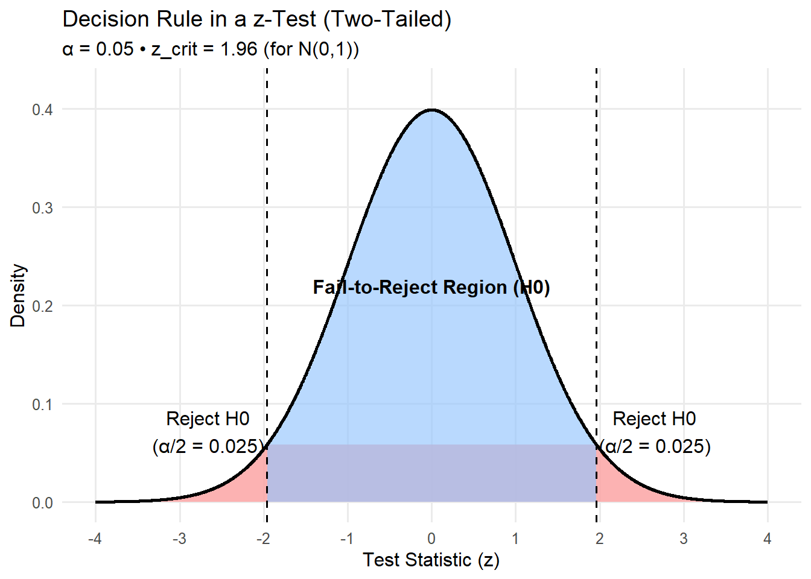
# Specify exact break points
hist(exam_scores, breaks = seq(0, 100, by = 10))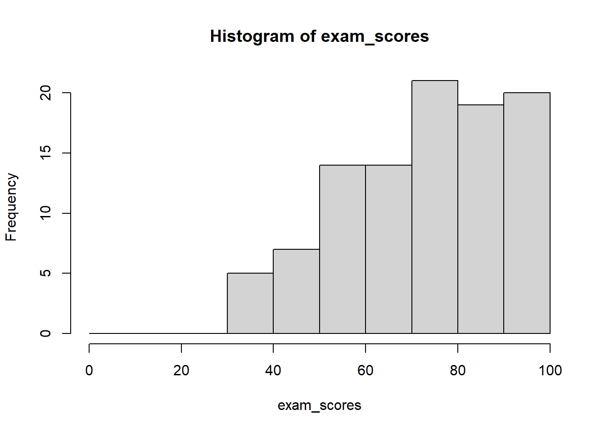
# Let R choose automatically (uses Sturges' rule by default)
hist(exam_scores)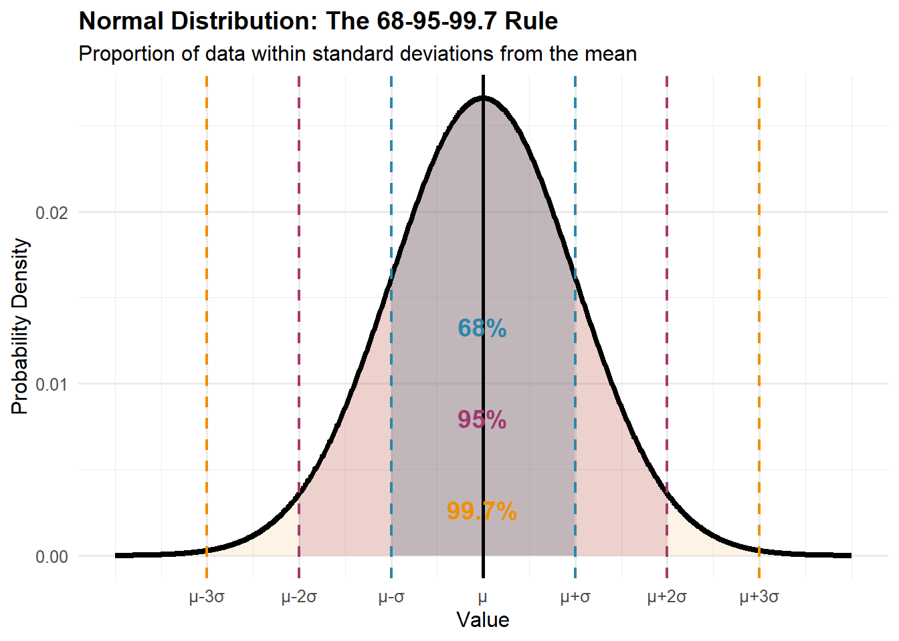
Statistics is the science of learning from data under uncertainty.
Statistics is a way to learn about the world from data. It teaches how to collect data wisely, spot patterns, estimate population parameters, and make predictions—stating how wrong we might be.
Statistics is the science of collecting, organizing, analyzing, interpreting, and presenting data. It encompasses both the methods for working with data and the theoretical foundations that justify these methods.
But statistics is more than just numbers and formulas—it’s a way of thinking about uncertainty and variation in the world around us.
Demography is the scientific study of human populations, focusing on their size, structure, distribution, and changes over time. It’s essentially the statistical analysis of people - who they are, where they live, how many there are, and how these characteristics evolve.
Statistics and demography are interconnected disciplines that provide powerful tools for understanding populations, their characteristics, and the patterns that emerge from data.
Main Rule: Unless otherwise specified, round the decimal parts of decimal numbers to at least 2 significant figures. In statistics, we often work with long decimal parts and very small numbers — don’t round excessively in intermediate steps, round at the end of calculations.
The decimal part consists of digits after the decimal point. In statistics, it’s particularly important to maintain appropriate precision:
Descriptive statistics:
Very small numbers (p-values, probabilities):
In the decimal part, significant figures are all digits except leading zeros:
In statistics, we often encounter very small numbers. Use scientific notation when it improves readability:
P-values and probabilities:
Large numbers (rare in basic statistics):
When in doubt: Better to keep an extra digit than to round too aggressively
Statistics is essential in social and political science for several key purposes:
Understanding Social Phenomena: Measuring inequality, poverty, unemployment, political participation; describing demographic patterns and social trends; quantifying attitudes, beliefs, and behaviors in populations.
Testing Theories: Political scientists theorize about democracy, voting behavior, conflict, and institutions. Sociologists develop theories about social mobility, inequality, and group dynamics. Statistics allows us to test whether these theories match reality.
Causal Inference: Social scientists want to answer “why” questions—Does education increase income? Do democracies go to war less often? Does social media affect political polarization? Statistics helps separate causation from mere correlation.
Policy Evaluation: Assessing whether interventions work—Does a job training program reduce unemployment? Did election reform increase voter turnout? Are anti-poverty programs effective? Statistics provides tools to evaluate what works and what doesn’t.
Public Opinion Research: Election polls and forecasting; measuring public support for policies; understanding how opinions vary across demographic groups; tracking attitude changes over time.
Making Generalizations: We can’t survey everyone, so we sample and use statistics to make inferences about entire populations. A poll of 1,000 people can tell us about a nation of millions (with known uncertainty).
Dealing with Complexity: Human societies are messy—many factors influence outcomes simultaneously. Statistics helps us control for confounding variables, isolate specific effects, and make sense of multivariate relationships.
The Uniqueness of Social Sciences: Unlike natural sciences, social sciences study human behavior, which is highly variable and context-dependent. Statistics provides the tools to find patterns and draw conclusions despite this inherent uncertainty.
When working with data, statisticians use two different approaches: exploration and confirmation/verification (inferential statistics). First, we examine the data to understand its characteristics and identify patterns. Then, we use formal methods to test specific hypotheses and draw conclusions.
When news reports say “unemployment decreased by 2,” do they mean 2 percentage points (pp) or 2 percent?
These are not the same:
Always ask:
Rule of thumb
Tiny lookup table
| Starting rate | “Down 2%” (relative) | “Down 2 pp” (absolute) |
|---|---|---|
| 6% | 6% × 0.98 = 5.88% (−0.12 pp) | 4% |
| 8% | 8% × 0.98 = 7.84% (−0.16 pp) | 6% |
| 10% | 10% × 0.98 = 9.8% (−0.2 pp) | 8% |
Uwaga (PL): 2% ≠ 2 punkty procentowe (pp).
What is EDA? Exploratory Data Analysis is the initial step where we examine data systematically to understand its structure and characteristics. This phase does not involve formal hypothesis testing—it focuses on discovering what the data contains.
Why do we do EDA?
When conducting EDA, we begin without predetermined hypotheses. Instead, we examine data from multiple perspectives to discover patterns and generate questions for further investigation.
1. Summary Numbers (Descriptive Statistics)
These are basic calculations that describe your data:
Finding the “Typical” Value:
Understanding Spread:
2. Visual Exploration
Graphical methods help reveal patterns that numerical summaries alone might not show:

3. Looking for Connections/Associations:
Many statistical techniques serve both exploratory and confirmatory functions:
Exploring: We calculate correlations or fit regression lines to understand what relationships exist in the data. The focus is on discovering patterns.
Confirming: We apply statistical tests to determine whether observed patterns are statistically significant or could have occurred by chance. The focus is on formal hypothesis testing.
The same technique can serve different purposes depending on the research phase.
4. Good Questions to Ask While Exploring:
After exploring, you might want to make formal conclusions. Inferential statistics helps you do this.
The Basic Idea: You have data from some people (a sample), but you want to know about everyone (the population). Inferential statistics helps you make educated guesses about the bigger group based on your smaller group.
A random sample requires that each member has a known, non-zero chance of being selected, not necessarily an equal chance.
When every member has an equal chance of selection, that’s specifically called a simple random sample - which is the most basic type.

Consider a chef preparing soup for 100 people who needs to assess its flavor without consuming the entire batch:
Population: The entire pot of soup (100 servings)
Sample: A single spoonful for tasting
Population Parameter: The true average saltiness of the complete pot (unknown)
Sample Statistic: The saltiness level detected in the spoonful (observable, a point estimate)
Statistical Inference: Using the spoonful’s characteristics to draw conclusions about the entire pot
1. Random sampling is essential: The chef must thoroughly stir the soup before sampling. Consistently sampling from the surface might miss seasoning that has settled, introducing systematic bias.
2. Sample size affects precision: A larger spoonful provides more reliable information about overall flavor than a small sip, though practical constraints (costs, time) limit sample size.
3. Uncertainty is inherent: Even with proper sampling technique, the spoonful might not perfectly represent the entire pot’s characteristics.
4. Systematic bias undermines inference: If someone secretly adds salt only to the sampling area, conclusions about the whole pot become invalid—illustrating how sampling bias distorts statistical inference.
5. Inference has scope limitations: The sample can estimate average saltiness but cannot reveal whether some portions are saltier than others, highlighting the limits of what samples can tell us about population variability.
This analogy captures the essence of statistical reasoning: using carefully selected samples to learn about larger populations while explicitly acknowledging and quantifying the inherent uncertainty in this process.

 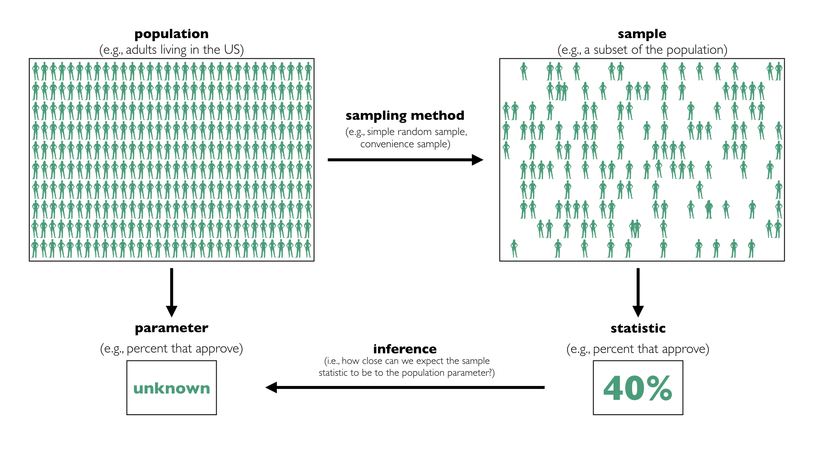
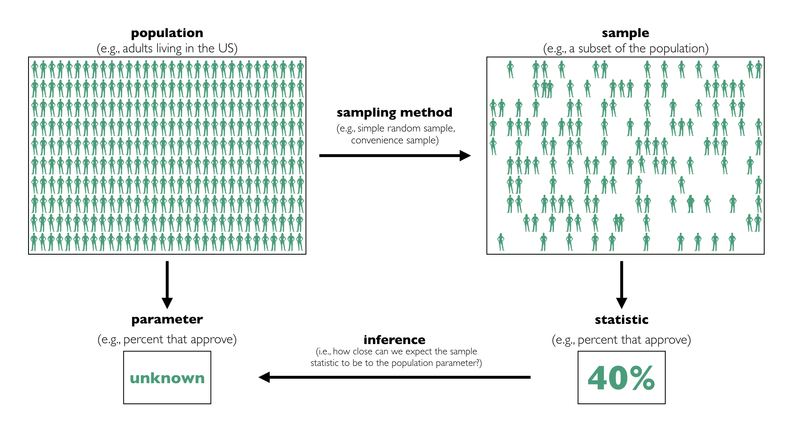
Your university is considering keeping the library open 24/7. The administration needs to know: What proportion of students support this change?
Ideal world: Ask all 20,000 students → Get the exact answer (\theta parameter)
Real world: Survey 100 students → Get an estimate (\hat{\theta}) with uncertainty
Imagine you survey 100 random students and find that 60 support the 24/7 library hours.
❌ Without Statistical Thinking
“60 out of 100 students said yes.”
Conclusion: “Exactly 60% of all students support it.”
Decision: “Since it’s over 50%, we have clear majority support.”
Problem: Ignores that a different sample might give 55% or 65%
✅ With Statistical Thinking
“60 out of 100 students said yes.”
Conclusion: “We estimate 60% support, with a margin of error of ±10 pp.”
Decision: “True support is likely between 50% and 70%—we need more data to be certain of majority support.”
Advantage: Acknowledges uncertainty and informs better decisions
Suppose we take a random sample of n=1000 voters and observe \hat p = 0.55 (i.e., 55% support for a candidate in upcoming elections, 550 in 1000 sample). Then:
Our best single-number estimate of the population share is \hat p = 0.55.
A typical “range of plausible values” (for 95\% confidence level) around \hat p can be approximated by \hat p \pm \text{Margin of (Random) Error}, i.e., \hat p \;\pm\; 2\sqrt{\frac{\hat p(1-\hat p)}{n}} \;=\; 0.55 \;\pm\; 2\sqrt{\frac{0.55\cdot 0.45}{1000}} \approx 0.55 \pm 0.031, i.e., roughly 52\%\text{–}58\% (about \pm 3.1 percentage points).
The width of this range shrinks predictably with sample size: \text{MoE (width)} \;\propto\; \frac{1}{\sqrt{n}}. For example, increasing n from 1000 to 4000 cuts the range by about half (0.0158).
Here’s how sample size affects our confidence:
| Sample Size | Your Result | Margin of (Random) Error | Confidence Interval | Interpretation |
|---|---|---|---|---|
| n = 100 | 60% | ±10 pp | 50% to 70% | Uncertain about majority |
| n = 400 | 60% | ±5 pp | 55% to 65% | Likely majority support |
| n = 1,000 | 60% | ±3 pp | 57% to 63% | Clear majority support |
| n = 1,600 | 60% | ±2.5 pp | 57.5% to 62.5% | Strong majority support |
| n = 10,000 | 60% | ±1 pp | 59% to 61% | Very precise estimate |
The Diminishing Returns Principle: Notice that going from 100 to 400 samples (4× increase) cuts the margin of error in half, but going from 1,600 to 10,000 samples (6× increase) only reduces it by 1.5 percentage points. To halve your margin of error, you must quadruple your sample size.
This is why most polls stop around 1,000-1,500 respondents—the gains in precision beyond that point rarely justify the additional cost and effort.
Statistical thinking transforms “60 students said yes” from a precise-sounding but misleading statement into an honest assessment: “We’re reasonably confident that between 50% and 70% of all students support this.”
This humility leads to better decisions.
Fundamental Principle: Statistics does not eliminate uncertainty—it helps us measure, manage, and communicate it effectively.
Literary Digest ran one of the largest polls in history — 2.4 million responses — yet spectacularly failed to predict the 1936 U.S. presidential election:
| Candidate | Prediction | Actual result | Error |
|---|---|---|---|
| Landon | 57% | 38% | 19 pp |
| Roosevelt | 43% | 62% | 19 pp |
What is systematic error?
Imagine a bathroom scale that’s miscalibrated by +5 lbs for everyone:
That was Literary Digest’s fatal flaw: a miscalibrated “instrument” for measuring public opinion. Taking 2.4 million measurements with a biased device only produced false confidence.
Where did the bias come from?
Two biases pushed in the same direction (toward Landon):
Together, these biases created large systematic error that no sample size could overcome.
Why sample size couldn’t save the poll
Drawing from biased frames is like using a scale calibrated for wealthy Americans to “weigh” all Americans. Contacting 2.4 million people from those lists yielded 2.4 million biased measurements. The poll’s computed “margin of error” captured only random variation; if it had been a simple random sample, the 95% MOE at n = 2.4M would be about ±0.06 percentage points — tiny, but irrelevant to the much larger bias.
The crucial lesson: A large biased sample is worse than a small, representative one. It delivers spurious precision on the wrong answer.
Modern polling: smaller, but smarter
The Literary Digest fiasco taught pollsters that how you sample matters far more than how many you sample.
A random experiment is any process whose result cannot be predicted with certainty, such as tossing a coin or rolling a die.
An outcome is a single possible result of that experiment—for example, getting “heads” or rolling a “5”.
An event is a set of one or more outcomes that we’re interested in; it could be a simple event (like rolling exactly a 3) or a compound event (like rolling an even number, which includes the outcomes 2, 4, and 6).
Probability is a way of measuring how likely something is to happen. It’s a number between 0 and 1 (or 0% and 100%) that represents the chance of an event occurring.
If something has a probability of 0, it’s impossible - it will never happen. If something has a probability of 1, it’s certain - it will definitely happen. Most things fall somewhere in between.
For example, when you flip a fair coin, there’s a 0.5 (or 50%) probability it will land on heads, because there are two equally likely outcomes and heads is one of them.
Probability helps us make sense of uncertainty and randomness in the world.
In statistics, randomness is an orderly way to describe uncertainty. While each individual outcome is unpredictable, stable patterns (more formally, empirical distributions of outcomes converge to probability distributions) emerge over many repetitions.
Example: Flip a fair coin:
The same applies to dice: you can’t predict your next roll, but roll 600 times and each number (1-6) will appear close to 100 times. This predictable long-run behavior from unpredictable individual events is the essence of statistical randomness.
Epistemic vs. Ontological Randomness:
Understanding the distinction between populations and samples is crucial for proper statistical analysis.
A population is the complete set of individuals, objects, or measurements about which we wish to draw conclusions. The key word here is “complete”—a population includes every single member of the group we’re studying.
Examples of Populations in Demography:
Populations can be:
Finite: Having a countable number of members (all current U.S. citizens, all Polish municipalities in 2024)
Infinite: Theoretical or uncountably large (all possible future births, all possible coin tosses or dice flips)
Fixed: Defined at a specific point in time (all residents on census day)
Dynamic: Changing over time (the population of a city that experiences births, deaths, and migration daily)
A sample is a subset of the population that is actually observed or measured. We study samples because examining entire populations is often impossible, impractical, or unnecessary.
Why We Use Samples:
Practical Impossibility: Imagine testing every person in China for a disease. By the time you finished testing 1.4 billion people, the disease situation would have changed completely, and some people tested early would need retesting.
Cost Considerations: The 2020 U.S. Census cost approximately $16 billion. Conducting such complete enumerations frequently would be prohibitively expensive. A well-designed sample survey can provide accurate estimates at a fraction of the cost.
Time Constraints: Policy makers often need information quickly. A sample survey of 10,000 people can be completed in weeks, while a census takes years to plan, execute, and process.
Destructive Measurement: Some measurements destroy what’s being measured. Testing the lifespan of light bulbs or the breaking point of materials requires using samples.
Greater Accuracy: Surprisingly, samples can sometimes be more accurate than complete enumerations. With a sample, you can afford better training for interviewers, more careful data collection, and more thorough quality checks.
Example of Sample vs. Population:
Let’s say we want to know the average household size in New York City:
Sampling selects a subset from a population to estimate characteristics. The sampling frame (the list from which we sample) must ideally include every member exactly once. Frame problems include undercoverage, overcoverage, duplication, and clustering.
Simple Random Sampling (SRS): Every sample of size n has equal probability. Gold standard but often impractical. Each unit has probability n/N of selection.
Systematic Sampling: Select every kth element where k = N/n. Simple to implement but watch for hidden periodicity in the frame.
Stratified Sampling: Divide population into homogeneous strata, sample independently within each. Ensures subgroup representation and can increase precision substantially. Allocation types: proportional, optimal (Neyman), or equal.
Cluster Sampling: Select groups (clusters) rather than individuals. Cost-effective for geographically dispersed populations but less efficient than SRS (design effect: DEFF = Variance(cluster)/Variance(SRS)). Can be single-stage or multi-stage.
Convenience: Selection by ease of access. Useful for pilots/exploratory work but severe selection bias likely.
Purposive/Judgmental: Deliberate selection of typical, extreme, or information-rich cases. Valuable for qualitative research and rare populations.
Quota: Match population proportions but without random selection. Fast and cheap but hidden selection bias and no measure of sampling error. (See: 1948 Dewey-Truman polling failure)
Snowball: Participants recruit others from their networks. Essential for hidden populations (drug users, undocumented immigrants) but biased toward well-connected individuals.
Key Principle: Probability sampling enables valid statistical inference; non-probability methods may be necessary for practical or ethical reasons but limit generalizability.
A superpopulation is a theoretical infinite population from which your finite population is considered to be one random sample.
Think of it in three levels:
Why do we need this concept?
Consider the 50 US states. You might measure unemployment rate for all 50 states—a complete census, no sampling needed. But you still want to:
Without the superpopulation concept, you’re stuck—you have all the data, so what’s left to infer? The answer: treat this year’s 50 values as one draw from an infinite superpopulation of possible values that could occur under similar conditions.
Mathematical representation:
The Data Generating Process (DGP) is the actual mechanism that creates your data—including all factors, relationships, and random elements.
An intuitive example: Suppose student test scores are truly generated by:
\text{Score}_i = 50 + 2(\text{StudyHours}_i) + 3(\text{SleepHours}_i) - 5(\text{Stress}_i) + 1.5(\text{Breakfast}_i) + \epsilon_i
This is the TRUE DGP. But you don’t know this! You might estimate:
\text{Score}_i = \alpha + \beta(\text{StudyHours}_i) + u_i
Your model is simpler than reality. You’re missing variables (sleep, stress, breakfast), so your estimates might be biased. The u_i term captures everything you missed.
Key insight: We never know the true DGP. Our statistical models are always approximations, trying to capture the most important parts of the unknown, complex truth.
When analyzing data, especially from surveys or samples, we can take two philosophical approaches:
Which is better?
Suppose you collect education spending per pupil for all 50 US states.
Without superpopulation thinking:
With superpopulation thinking:
The key insight: Even with complete data, the superpopulation framework enables statistical inference by treating observed values as one possible outcome from an underlying stochastic process.
Superpopulation: Treats your finite population as one draw from an infinite possibility space—essential when your finite population is small or completely observed
DGP: The true (unknown) process creating your data—your models try to approximate it
Data: Information collected during research – this includes survey responses, experimental results, economic indicators, social media content, or any other measurable observations.
Observations for variables (columns in a database) collected at a single point in time across multiple entities/individuals:
| Individual | Age | Income | Education |
|---|---|---|---|
| 1 | 25 | 50000 | Bachelor’s |
| 2 | 35 | 75000 | Master’s |
| 3 | 45 | 90000 | PhD |
Observations of a single entity tracked over multiple time points:
| Year | GDP (in billions) | Unemployment Rate |
|---|---|---|
| 2018 | 20,580 | 3.9% |
| 2019 | 21,433 | 3.7% |
| 2020 | 20,933 | 8.1% |
Observations of multiple entities tracked over time:
| Country | Year | GDP per capita | Life Expectancy |
|---|---|---|---|
| USA | 2018 | 62,794 | 78.7 |
| USA | 2019 | 65,118 | 78.8 |
| Canada | 2018 | 46,194 | 81.9 |
| Canada | 2019 | 46,194 | 82.0 |
A special case of panel data where:
Each row represents an entity; columns represent variables/time points:
| Country | GDP_2018 | GDP_2019 | LE_2018 | LE_2019 |
|---|---|---|---|---|
| USA | 62,794 | 65,118 | 78.7 | 78.8 |
| Canada | 46,194 | 46,194 | 81.9 | 82.0 |
Each row represents a unique entity-time-variable combination:
| Country | Year | Variable | Value |
|---|---|---|---|
| USA | 2018 | GDP per capita | 62,794 |
| USA | 2019 | GDP per capita | 65,118 |
| USA | 2018 | Life Expectancy | 78.7 |
| USA | 2019 | Life Expectancy | 78.8 |
| Canada | 2018 | GDP per capita | 46,194 |
| Canada | 2019 | GDP per capita | 46,194 |
| Canada | 2018 | Life Expectancy | 81.9 |
| Canada | 2019 | Life Expectancy | 82.0 |
Note: Long format is generally preferred for:
Understanding data types and distributions is fundamental to choosing appropriate analyses and interpreting results correctly.
Data consists of collected observations or measurements. The type of data determines what mathematical operations (e.g. multiplication) are meaningful and what statistical methods apply.
Continuous Data can take any value within a range:
Examples with Demographic Relevance:
Properties:
Discrete Data can only take specific values:
Examples:
Nominal Data represents categories with no inherent order:
Examples:
What We Can Do:
What We Cannot Do:
Ordinal Data represents ordered categories:
Examples:
The Challenge: Intervals between categories aren’t necessarily equal. The “distance” from Poor to Fair health may not equal the distance from Good to Excellent.
A data distribution describes how values spread across possible outcomes (what values and how often a variable takes). Distributions tell us what values are common, what values are rare, and what patterns exist in our data.
Understanding distributions is fundamental to statistics because it helps us summarize large datasets, identify patterns, and make informed decisions.
For example, knowing that most students score between 60-80 on an exam tells us more than just knowing the average score.
When we analyze data, we’re often interested in how many times each value (or range of values) appears. This leads us to three related concepts:
(Absolute) Frequency is simply the count of how many times a particular value or category occurs in your data. If 15 students scored between 70-80 points on an exam, the frequency for that range is 15.
Relative frequency expresses frequency as a proportion or percentage of the total. It answers the question: “What fraction of all observations fall into this category?” Relative frequency is calculated as:
\text{Relative Frequency} = \frac{\text{Frequency}}{\text{Total Number of Observations}}
If 15 out of 100 students scored 70-80 points, the relative frequency is 15/100 = 0.15 or 15%. Relative frequencies always sum to 1 (or 100%), making them useful for comparing distributions with different sample sizes.
Density (the degree of compactness of something, the probability per unit length) is similar to relative frequency but accounts for the width of intervals. When we group continuous data (like time or unemployment rate) into bins of different widths, density ensures fair comparison. Density is calculated as:
\text{Density} = \frac{\text{Relative Frequency}}{\text{Interval Width}}
Density is particularly important for continuous variables because it ensures that the total area under the distribution equals 1, which allows us to interpret areas as probabilities.
The probability of an event is a number between 0 and 1; the larger the probability, the more likely an event is to occur.
Cumulative frequency tells us how many observations fall at or below a certain value. Instead of asking “how many observations are in this category?”, cumulative frequency answers “how many observations are in this category or any category below it?” It’s calculated by adding up all frequencies from the lowest value up to and including the current value.
Similarly, cumulative relative frequency expresses this as a proportion of the total, answering “what percentage of observations fall at or below this value?” For example, if the cumulative relative frequency at score 70 is 0.40, this means 40% of students scored 70 or below.
A frequency distribution table organizes data by showing how observations are distributed across different values or intervals. Here’s an example with exam scores:
| Score Range | Frequency | Relative Frequency | Cumulative Frequency | Cumulative Relative Frequency | Density |
|---|---|---|---|---|---|
| 0-50 | 10 | 0.10 | 10 | 0.10 | 0.002 |
| 50-70 | 30 | 0.30 | 40 | 0.40 | 0.015 |
| 70-90 | 45 | 0.45 | 85 | 0.85 | 0.0225 |
| 90-100 | 15 | 0.15 | 100 | 1.00 | 0.015 |
| Total | 100 | 1.00 | - | - | - |
This table reveals that most students scored in the 70-90 range, while very few scored below 50 or above 90. The cumulative columns show us that 40% of students scored below 70, and 85% scored below 90. Such tables are invaluable for getting a quick overview of your data before conducting more complex analyses.
A histogram is a graphical representation of a frequency distribution. It displays data using bars where:
Choosing bin widths: The number and width of bins significantly affects how your histogram looks. Too few bins hide important patterns, while too many bins create “noise” and make patterns hard to see.
In statistics, noise is unwanted random variation that obscures the pattern we’re trying to find. Think of it like static on a radio—it makes the music (the “signal”) harder to hear. In data, noise comes from measurement errors, random fluctuations, or the inherent variability in what we’re studying. Noise is random variation in data that hides the real patterns we want to see, similar to how background noise makes conversation difficult to hear.
Several approaches help determine appropriate bin widths:
Sturges’ rule: Use k = 1 + \log_2(n) bins, where n is the sample size. This works well for roughly symmetric distributions.
Square root rule: Use k = \sqrt{n} bins. A simple, reasonable default for many situations.
In R, you can specify bins in several ways:
# Specify number of bins
hist(exam_scores, breaks = 10)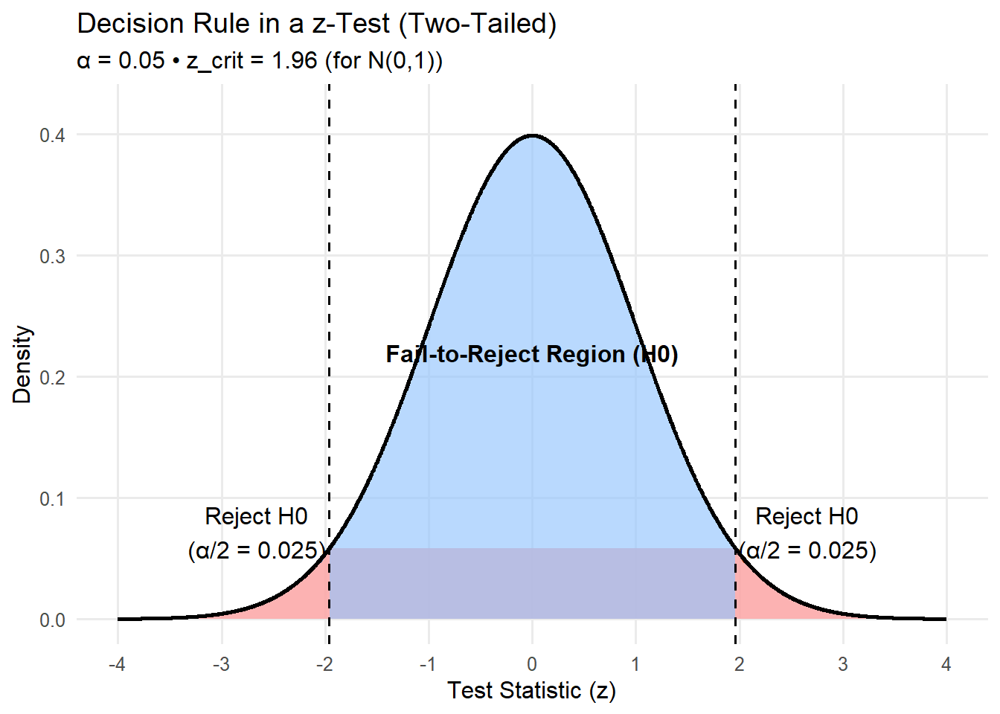
# Specify exact break points
hist(exam_scores, breaks = seq(0, 100, by = 10))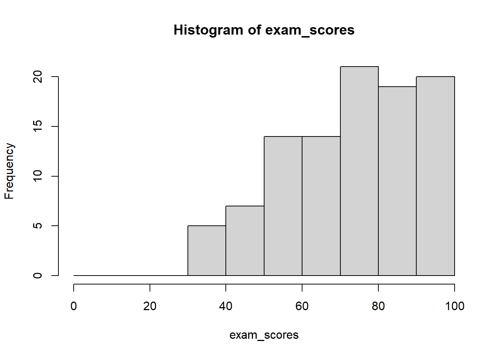
# Let R choose automatically (uses Sturges' rule by default)
hist(exam_scores)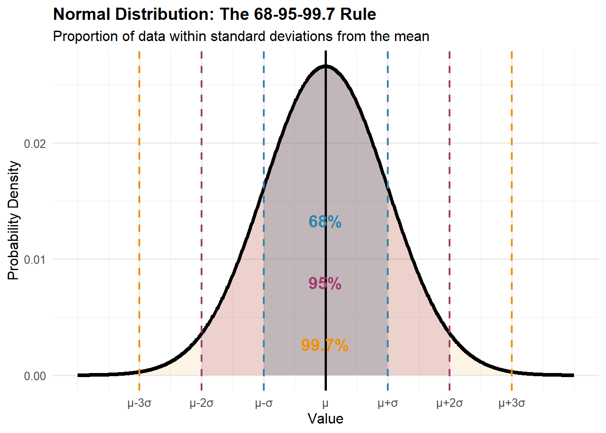
The best approach is often to experiment with different bin widths to find what best reveals your data’s pattern. Start with a default, then try fewer and more bins to see how the story changes.
Defining bin boundaries: When creating bins for a frequency table, you must decide how to handle values that fall exactly on the boundaries. For example, if you have bins 0-10 and 10-20, which bin does the value 10 belong to?
The solution is to use interval notation to specify whether each boundary is included or excluded:
Standard convention: Most statistical software, including R, uses left-closed, right-open intervals [a, b) for all bins except the last one, which is fully closed [a, b]. This means:
For example, with bins 0-20, 20-40, 40-60, 60-80, 80-100:
| Score Range | Interval Notation | Values Included |
|---|---|---|
| 0-20 | [0, 20) | 0 ≤ score < 20 |
| 20-40 | [20, 40) | 20 ≤ score < 40 |
| 40-60 | [40, 60) | 40 ≤ score < 60 |
| 60-80 | [60, 80) | 60 ≤ score < 80 |
| 80-100 | [80, 100] | 80 ≤ score ≤ 100 |
This convention ensures that:
When presenting frequency tables in reports, you can simply write “0-20, 20-40, …” and note that bins are left-closed, right-open, or explicitly show the interval notation if precision is important.
Frequency histogram shows the raw counts:
# R code example
hist(exam_scores,
breaks = seq(0, 100, by = 10),
main = "Distribution of Exam Scores",
xlab = "Score",
ylab = "Frequency",
col = "lightblue")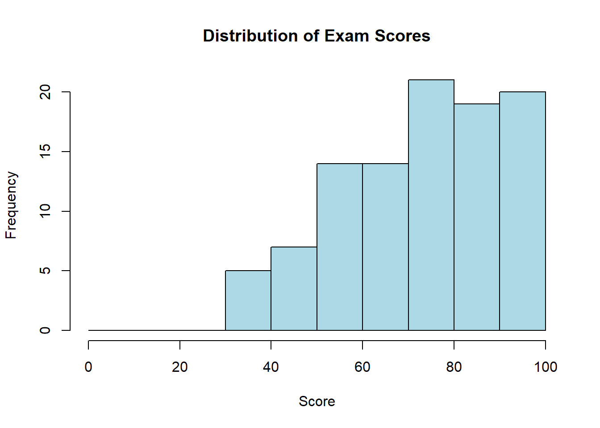
Relative frequency histogram shows proportions (useful when comparing groups of different sizes):
hist(exam_scores,
breaks = seq(0, 100, by = 10),
freq = FALSE, # This creates relative frequency/density
main = "Distribution of Exam Scores",
xlab = "Score",
ylab = "Relative Frequency",
col = "lightgreen")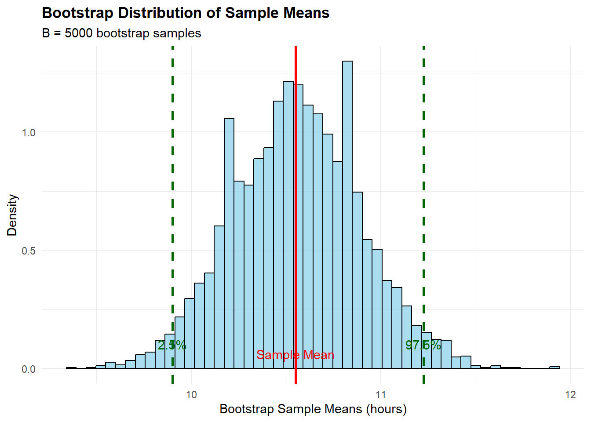
Density histogram adjusts for interval width and is used with density curves:
hist(exam_scores,
breaks = seq(0, 100, by = 10),
freq = FALSE, # Creates density scale
main = "Distribution of Exam Scores",
xlab = "Score",
ylab = "Density",
col = "lightcoral")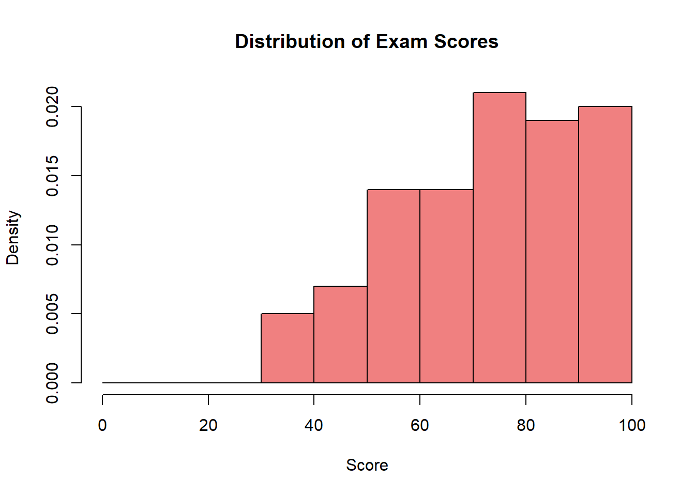
A density curve is a smooth line that approximates/models the shape of a distribution. Unlike histograms that show actual data in discrete bins, density curves show the overall pattern as a continuous function. The area under the entire curve always equals 1, and the area under any portion of the curve represents the proportion of observations in that range.
# Adding a density curve to a histogram
hist(exam_scores,
freq = FALSE,
main = "Exam Scores with Density Curve",
xlab = "Score",
ylab = "Density",
col = "lightblue",
border = "white")
lines(density(exam_scores),
col = "darkred",
lwd = 2)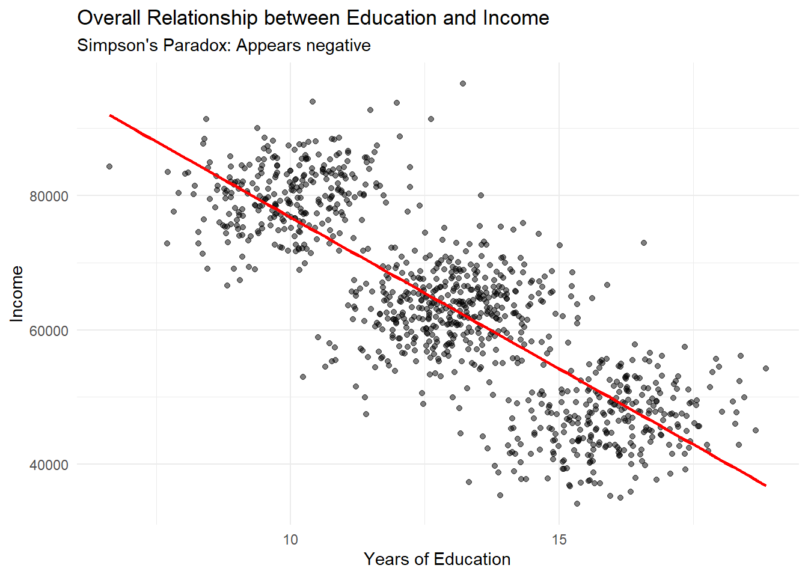
Density curves are particularly useful for:
In statistics, a percentile indicates the relative position of a data point within a dataset by showing the percentage of observations that fall at or below that value. For example, if a student scores at the 90th percentile on a test, their score is equal to or higher than 90% of all other scores.
Quartiles are special percentiles that divide data into four equal parts: the first quartile (Q1, 25th percentile), second quartile (Q2, 50th percentile, also the median), and third quartile (Q3, 75th percentile). If Q1 = 65 points, then 25% of students scored 65 or below.
More generally, quantiles are values that divide data into equal-sized groups—percentiles divide into 100 parts, quartiles into 4 parts, deciles into 10 parts, and so on.
Cumulative frequency plots, also called ogives (pronounced “oh-jive”), display how frequencies accumulate across values. These plots use lines rather than bars and always increase from left to right, eventually reaching the total number of observations (for cumulative frequency) or 1.0 (for cumulative relative frequency).
Cumulative frequency plots are excellent for:
# Creating cumulative frequency data
score_breaks <- seq(0, 100, by = 10)
freq_counts <- hist(exam_scores, breaks = score_breaks, plot = FALSE)$counts
cumulative_freq <- cumsum(freq_counts)
# Plotting cumulative frequency
plot(score_breaks[-1], cumulative_freq,
type = "b", # both points and lines
main = "Cumulative Frequency of Exam Scores",
xlab = "Score",
ylab = "Cumulative Frequency",
col = "darkblue",
lwd = 2,
pch = 19)
grid()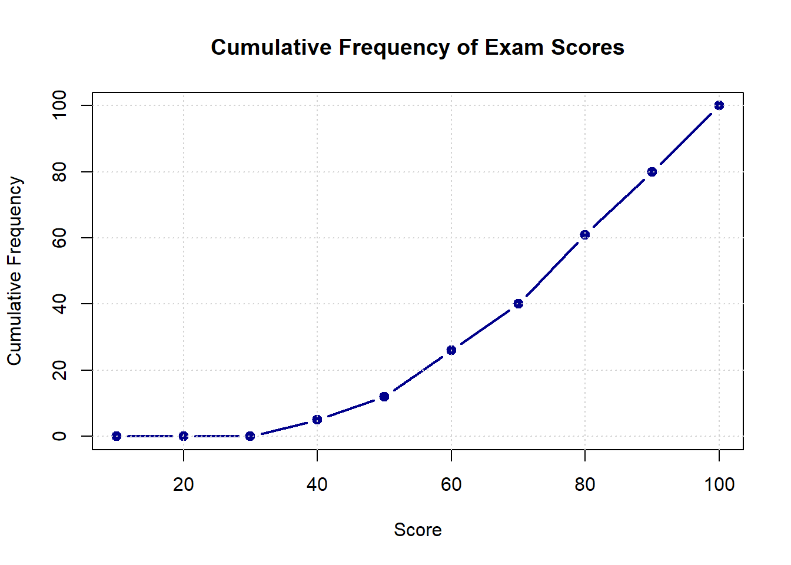
For cumulative relative frequency (which is more commonly used):
# Cumulative relative frequency
cumulative_rel_freq <- cumulative_freq / length(exam_scores)
plot(score_breaks[-1], cumulative_rel_freq,
type = "b",
main = "Cumulative Relative Frequency of Exam Scores",
xlab = "Score",
ylab = "Cumulative Relative Frequency",
col = "darkred",
lwd = 2,
pch = 19,
ylim = c(0, 1))
grid()
abline(h = c(0.25, 0.5, 0.75), lty = 2, col = "gray") # Quartile lines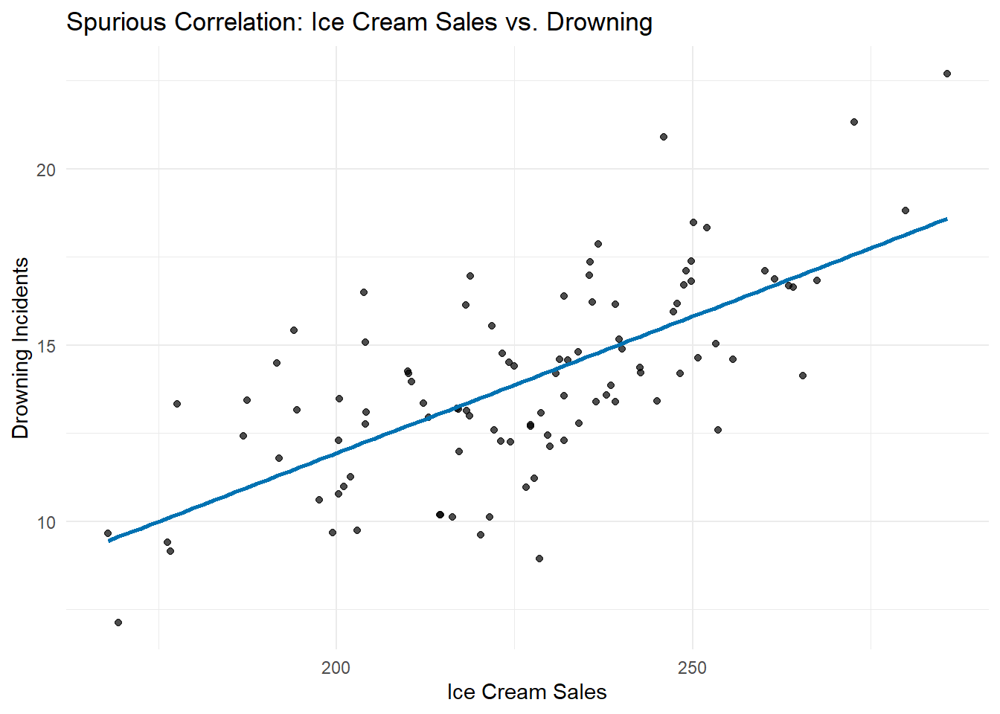
The cumulative relative frequency curve makes it easy to read percentiles. For example, if you draw a horizontal line at 0.75 and see where it intersects the curve, the corresponding x-value is the 75th percentile—the score below which 75% of students fall.
The type of variable you’re analyzing determines how you visualize its distribution:
Discrete distributions apply to variables that can only take specific, countable values. Examples include number of children in a family (0, 1, 2, 3…), number of customer complaints per day, or responses on a 5-point Likert scale.
For discrete data, we typically use:
# Example: Number of children per family
children <- c(0, 1, 2, 2, 1, 3, 0, 2, 1, 4, 2, 1, 0, 2, 3)
barplot(table(children),
main = "Distribution of Number of Children",
xlab = "Number of Children",
ylab = "Frequency",
col = "skyblue")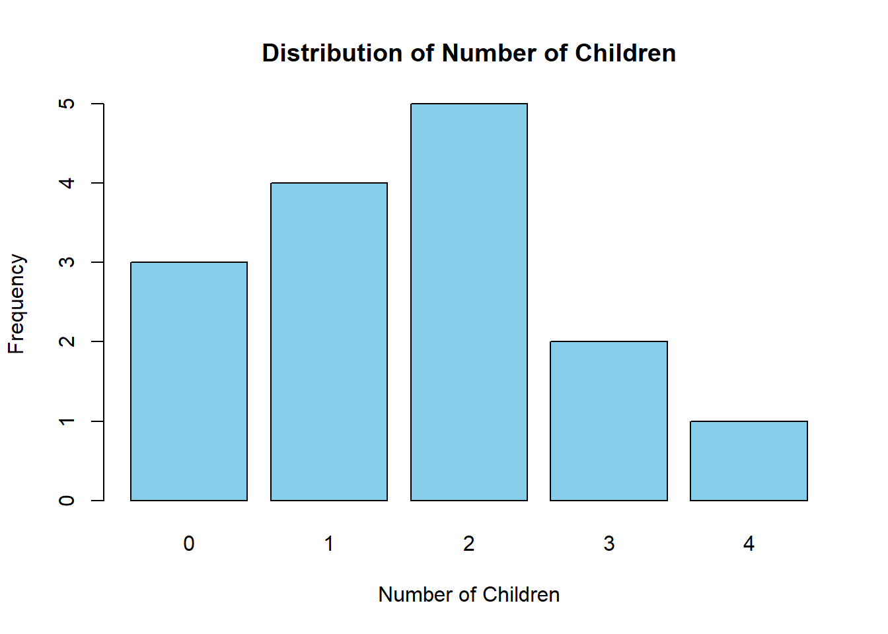
Continuous distributions apply to variables that can take any value within a range. Examples include temperature, response time, height, or turnout percentage.
For continuous data, we use:
# Example: Response time distribution
hist(response_time,
breaks = 15,
freq = FALSE,
main = "Distribution of Response Time",
xlab = "Response Time (seconds)",
ylab = "Density",
col = "lightgreen",
border = "white")
lines(density(response_time),
col = "darkgreen",
lwd = 2)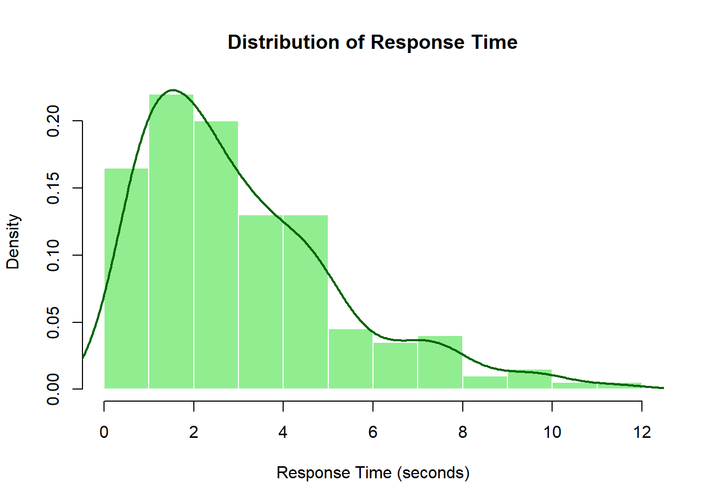
The key difference is that discrete distributions show probability at specific points, while continuous distributions show probability density across ranges. For continuous variables, the probability of any exact value is essentially zero—instead, we talk about the probability of falling within an interval.
Understanding whether your variable is discrete or continuous guides your choice of visualization and statistical methods, ensuring your analysis accurately represents the nature of your data.
Shape Characteristics:
Symmetry vs. Skewness:
Example of Skewness Impact:
Income distribution in the U.S.:

Modality:

Important Probability Distributions:
Normal (Gaussian) Distribution:
Demographic Applications:
Binomial Distribution:
Example: Number of male births out of 100 births (p \approx 0.512)
Poisson Distribution:
Demographic Applications:
Histogram: For continuous data, shows frequency with bar heights.
Bar Chart: For categorical data, shows frequency with separated bars.
Cumulative Distribution Function (CDF): Shows proportion of values ≤ each point of data.
Box Plot (Box-and-Whisker Plot): A visual summary that displays the distribution’s key statistics using five key values.
The Five-Number Summary:
What It Reveals:
Quick Interpretation:
Box plots are especially useful for comparing multiple groups side-by-side!
A variable is any characteristic that can take different values across units of observation.
Political science has evolved from a primarily theoretical discipline to one that increasingly relies on empirical evidence. Whether we’re studying:
We need systematic ways to analyze data and draw conclusions that go beyond anecdotes and personal impressions.
Consider this question: “Does democracy lead to economic growth?”
Your intuition might suggest yes—democratic countries tend to be wealthier. But is this causation or correlation? Are there exceptions? How confident can we be in our conclusions?
Statistics provides the tools to move from hunches to evidence-based answers, helping us distinguish between what seems true and what actually is true.
Quantitative Variables represent amounts or quantities and can be:
Continuous Variables: Can take any value within a range, limited only by measurement precision.
Discrete Variables: Can only take specific values, usually counts.
Qualitative Variables represent categories or qualities and can be:
Nominal Variables: Categories with no inherent order.
Ordinal Variables: Categories with a meaningful order but unequal intervals.
Understanding measurement scales is crucial because they determine which statistical methods are appropriate:
Nominal Scale: Categories only—we can count frequencies but cannot order or perform arithmetic. Example: We can say 45% of residents were born locally, but we cannot calculate an “average birthplace.”
Ordinal Scale: Order matters but differences between values are not necessarily equal. Example: The difference between “poor” and “fair” health may not equal the difference between “good” and “excellent” health.
Interval Scale: Equal intervals between values but no true zero point. Example: Temperature in Celsius—the difference between 20°C and 30°C equals the difference between 30°C and 40°C, but 0°C doesn’t mean “no temperature.”
Ratio Scale: Equal intervals with a true zero point, allowing all mathematical operations. Example: Income—$40,000 is twice as much as $20,000, and $0 means no income.
These concepts form the core of statistical inference—how we learn about populations from samples. Understanding the relationships between these terms is essential for proper statistical reasoning.
A parameter is a numerical characteristic of a population. Parameters are typically unknown because we cannot measure the entire population. They are fixed values (not random) but unknown to us. We denote parameters with Greek letters.
Common Demographic Parameters:
Example: The true mean age at first birth for all women in France who gave birth in 2023 is a parameter. Let’s call it \mu = 31.2 years. We don’t know this value without measuring every single birth.
A statistic is a numerical characteristic calculated from sample data. Statistics are random variables—their values vary from sample to sample. We use Roman letters for statistics.
Common Sample Statistics:
Example: From a sample of 500 births in France, we calculate a sample mean age at first birth of \bar{x} = 30.9 years. This is our statistic. A different sample might yield \bar{x} = 31.4 years.
Think of this relationship like trying to understand the depth of a lake:
An estimator is a rule or formula for calculating an estimate of a population parameter from sample data. An estimator is a function that maps sample data to parameter estimates. It’s the recipe, not the cake.
Properties of Good Estimators:
Unbiasedness: On average, the estimator equals the true parameter value. If we repeated sampling many times, the average of all our estimates would equal the true parameter.
Example: The sample mean \bar{x} is an unbiased estimator of population mean \mu. If we took 1,000 different samples and calculated 1,000 sample means, their average would be very close to \mu.
Consistency: As sample size increases, the estimator converges to the true parameter value.
Example: With n=10, our estimate of average income might be off by $5,000. With n=1,000, we might be off by only $500. With n=100,000, we might be off by only $50.
Efficiency: Among unbiased estimators, the one with the smallest variance. The sample mean is more efficient than the sample median for estimating the population mean of a normal distribution.
Common Estimators:
Note: We divide by (n-1) not n for sample variance to make it unbiased—this is called Bessel’s correction.
The estimand is the specific population parameter we aim to estimate. It’s the target of our estimation procedure. Clear specification of the estimand is crucial for proper statistical inference and avoiding misinterpretation.
Examples of Clearly Defined Estimands:
Why Precise Estimand Definition Matters:
Consider studying “unemployment rate.” The estimand must specify:
Different definitions lead to different numbers. The U.S. Bureau of Labor Statistics publishes six different unemployment rates (U-1 through U-6) based on different definitions.
An estimate is the specific numerical value calculated by applying an estimator to observed data. It’s our best guess at the true parameter value based on available information.
Example of the Complete Process:
An estimand is the specific quantity we aim to estimate—what we’re targeting with our statistical analysis. While this is often a population parameter, estimands can be more complex.
Examples of different estimands:
Simple parameter estimand: The population mean income (\mu)
Comparative estimand: The difference in mean income between two groups (\mu_1 - \mu_2)
Causal estimand: The average treatment effect of a job training program on earnings
Conditional estimand: Expected voter turnout given specific weather conditions
Understanding statistical inference requires distinguishing between these related but distinct concepts:
Example in context:
This framework helps clarify exactly what question we’re answering and ensures our methods align with our research goals.
Not all uncertainty is the same. Understanding different sources of unpredictability helps us choose appropriate statistical methods and interpret results correctly.
| Concept | What is it? | Source of unpredictability | Example |
|---|---|---|---|
| Randomness | Individual outcomes are uncertain, but the probability distribution is known or modeled. | Fluctuations across realizations; lack of information about a specific outcome. | Dice roll, coin toss, polling sample |
| Chaos | Deterministic dynamics highly sensitive to initial conditions (butterfly effect). | Tiny initial differences grow rapidly → large trajectory divergences. | Weather forecasting, double pendulum, population dynamics |
| Entropy | A measure of uncertainty/dispersion (information-theoretic or thermodynamic). | Larger when outcomes are more evenly distributed (less predictive information). | Shannon entropy in data compression |
| “Haphazardness” (colloquial) | A felt lack of order without an explicit model; a mixture of mechanisms. | No structured description or stable rules; overlapping processes. | Traffic patterns, social media trends |
| Quantum randomness | A single outcome is not determined; only the distribution is specified (Born rule). | Fundamental (ontological) indeterminacy of individual measurements. | Electron spin measurement, photon polarization |
Deterministic chaos ≠ statistical randomness: A chaotic system is fully deterministic yet practically unpredictable due to extreme sensitivity to initial conditions. Statistical randomness, by contrast, models uncertainty via probability distributions where individual outcomes are genuinely uncertain.
Why this matters: In statistics, we typically model phenomena as random processes, assuming we can specify probability distributions even when individual outcomes are unpredictable. This assumption underlies most statistical inference.
In the Copenhagen interpretation, randomness is fundamental (ontological): a single outcome cannot be predicted, but the probability distribution is given by the Born rule.
This represents true randomness at the most basic level of nature, not just our ignorance of determining factors.
No measurement or estimate is perfect. Understanding different types of error is crucial for interpreting results and improving study design.
Every time we use a sample to learn about a population, we introduce uncertainty. The key is to:
No measurement or estimate is perfect. Understanding different types of error is crucial for interpreting results and improving study design.
Every time we use a sample to learn about a population, we introduce uncertainty. The key is to:
Random error represents unpredictable fluctuations that vary from observation to observation without a consistent pattern. These errors arise from various sources of natural variability in the data collection and measurement process.
Random error encompasses several subtypes:
Sampling error is the most common type of random error—it arises because we observe a sample rather than the entire population. Different random samples from the same population will yield different estimates purely by chance.
Key properties:
Example: Internet Access Survey
Imagine surveying 100 random households about internet access:
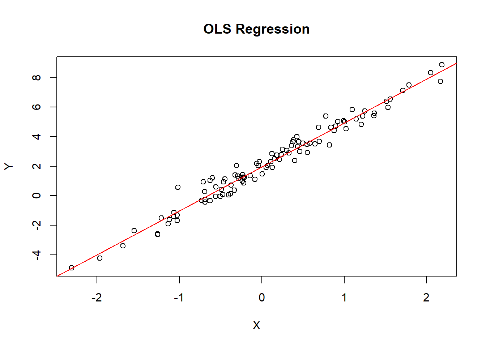
The variation around the true value (red line) represents sampling error. With larger samples, estimates would cluster more tightly.
Measurement error is random variation in the measurement process itself—even when measuring the same thing repeatedly.
Examples:
Unlike sampling error (which comes from who/what we observe), measurement error comes from how we observe.
Systematic error represents consistent deviation in a particular direction. Unlike random error, it doesn’t average out with repeated sampling or measurement—it persists and pushes results consistently away from the truth.
Sampling method systematically excludes certain groups.
Example: Phone surveys during business hours underrepresent employed people.
Measurement instrument consistently over/under-measures.
Example: Scales that always read 2 pounds heavy; survey questions that lead respondents toward particular answers.
Respondents systematically misreport.
Example: People underreport alcohol consumption, overreport voting, or give socially desirable answers.
Non-responders differ systematically from responders.
Example: Very sick and very healthy people less likely to respond to health surveys, leaving only those with moderate health.
Only observing “survivors” of some process.
Example: During WWII, the military analyzed returning bombers to determine where to add armor. Planes showed the most damage on wings and tail sections. Abraham Wald realized the flaw: they should armor where there weren’t bullet holes—the engine and cockpit. Planes hit in those areas never made it back to be analyzed. They were only studying the survivors.
Observers or interviewers systematically influence results.
Example: Interviewers unconsciously prompting certain responses or recording observations that confirm their expectations.
Mathematically, total error (Mean Squared Error) decomposes into:
\mathrm{MSE}(\hat\theta) = \underbrace{\mathrm{Var}(\hat\theta)}_{\text{random error}} + \underbrace{\big(\mathrm{Bias}(\hat\theta)\big)^2}_{\text{systematic error}}
A large biased sample gives a precisely wrong answer.

Intuitive analogy: Think of trying to hit a bullseye:
The standard error (SE) quantifies how much an estimate varies across different possible samples. It measures sampling error specifically.
For a Proportion:
SE(\hat{p}) = \sqrt{\frac{\hat{p}(1-\hat{p})}{n}}
For a Mean:
SE(\bar{x}) = \frac{s}{\sqrt{n}}
For a Difference:
SE(\bar{x}_1 - \bar{x}_2) = \sqrt{\frac{s_1^2}{n_1} + \frac{s_2^2}{n_2}}
Standard error quantifies sampling error only. It does not account for systematic errors (bias), measurement error, or other sources of uncertainty.
The margin of error (MOE) represents the expected maximum difference between sample estimate and true parameter.
\text{MOE} = \text{Critical Value} \times \text{Standard Error}
For 95% confidence, we use 1.96 (often simplified to 2). This ensures that ~95% of intervals constructed this way will contain the true parameter.
A confidence interval provides a range of plausible values:
\text{CI} = \text{Estimate} \pm (\text{Critical Value} \times \text{Standard Error})
Confidence intervals quantify sampling uncertainty but assume no systematic error. A perfectly precise estimate (narrow CI) can still be biased if the study design is flawed.
When a poll reports “Candidate A: 52%, Candidate B: 48%”, this is incomplete without uncertainty quantification.
With ~1,000 randomly selected respondents:
The ±3% margin of error quantifies sampling uncertainty only. It does not account for:
| Sample Size | Margin of Error (95%) | Use Case |
|---|---|---|
| n = 100 | ± 10 pp | Broad direction only |
| n = 400 | ± 5 pp | General trends |
| n = 1,000 | ± 3 pp | Standard polls |
| n = 2,500 | ± 2 pp | High precision |
| n = 10,000 | ± 1 pp | Very high precision |
To halve the margin of error, you need four times the sample size because \text{MOE} \propto 1/\sqrt{n}
This applies only to sampling error. Doubling your sample size from 1,000 to 2,000 won’t fix systematic problems like biased question wording or unrepresentative sampling methods.
A transparent poll discloses:
Most news reports mention only the topline numbers and occasionally the margin of error. They rarely discuss potential systematic biases, which can be much larger than sampling error.
The following simulation demonstrates how confidence intervals behave across repeated sampling:
library(ggplot2)
set.seed(42)
# Parameters
n_polls <- 20
n_people <- 100
true_support <- 0.50
# Simulate independent polls
support <- rbinom(n_polls, n_people, true_support) / n_people
# Calculate standard errors and margins of error
se <- sqrt(support * (1 - support) / n_people)
moe <- 2 * se # Simplified multiplier for clarity
# Create confidence intervals
lower <- pmax(0, support - moe)
upper <- pmin(1, support + moe)
# Check coverage
covers <- (lower <= true_support) & (upper >= true_support)
n_cover <- sum(covers)
results <- data.frame(
poll = seq_len(n_polls),
support, se, moe, lower, upper, covers
)
# Create visualization
ggplot(results, aes(x = poll, y = support, color = covers)) +
geom_errorbar(aes(ymin = lower, ymax = upper),
width = 0.3, alpha = 0.8, size = 1) +
geom_point(size = 3) +
geom_hline(yintercept = true_support,
linetype = "dashed",
color = "black",
alpha = 0.7) +
scale_color_manual(
values = c("TRUE" = "forestgreen", "FALSE" = "darkorange"),
labels = c("TRUE" = "Covers truth", "FALSE" = "Misses truth"),
name = NULL
) +
scale_y_continuous(labels = scales::percent,
limits = c(0, 1)) +
labs(
title = "Sampling Variability in 20 Independent Polls",
subtitle = paste0(
"Each poll: n = ", n_people, " | True value = ",
scales::percent(true_support),
" | Coverage: ", n_cover, "/", n_polls,
" (", round(100 * n_cover / n_polls), "%)"
),
x = "Poll Number",
y = "Estimated Support",
caption = "Error bars show approximate 95% confidence intervals"
) +
theme_minimal(base_size = 13) +
theme(
legend.position = "top",
panel.grid.minor = element_blank(),
plot.title = element_text(face = "bold")
)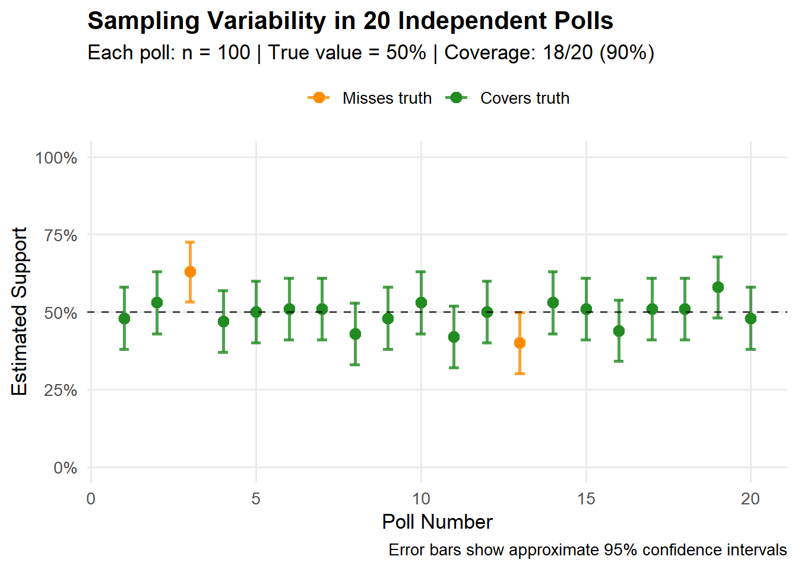
Most intervals capture the true value, but some “miss” purely due to sampling randomness. This is expected and quantifiable—it’s the nature of random sampling error.
Important: This simulation assumes no systematic bias. In real polling, systematic errors (non-response bias, coverage problems, question wording effects) can shift all estimates in the same direction, making them consistently wrong even with large samples.
❌ Myth: “The true value is definitely within the margin of error”
✅ Reality:
❌ Myth: “If we just survey more people, we’ll eliminate all error”
✅ Reality:
❌ Myth: “Random error means someone made mistakes”
✅ Reality:
❌ Myth: “95% confidence means there’s a 95% chance the true value is in this specific interval”
✅ Reality:
❌ Myth: “We can calculate the bias just like we calculate standard error”
✅ Reality:
Consider a scenario where 20 polls all show Candidate A leading by 3-5 points, with margins of error around ±3%. The polls seem consistent, but Candidate B wins.
What happened?
The lesson: Consistency among polls doesn’t guarantee accuracy. All polls can share the same systematic biases, giving false confidence in wrong estimates.
Understanding Error Types:
Quantifying Uncertainty:
Standard error measures typical sampling variability (one type of random error)
Margin of error ≈ 2 × SE gives a range for 95% confidence about sampling uncertainty
Sample size and sampling error precision follow: \text{SE} \propto 1/\sqrt{n}
Confidence intervals provide plausible ranges but assume no systematic bias
Critical Insights:
A precisely wrong answer (large biased sample) is often worse than an imprecisely right answer (small unbiased sample)
Always consider both sampling error AND potential systematic biases—published margins of error typically ignore the latter
Transparency matters: Report methodology, response rates, and potential biases, not just point estimates and margins of error
Validation is essential: Compare estimates to known values whenever possible to detect systematic errors
When designing studies:
First: Minimize systematic error through careful design
Then: Optimize sample size to achieve acceptable precision
Finally: Report uncertainty honestly
Sampling is the process of selecting a subset of individuals from a population to estimate characteristics of the whole population. The way we sample profoundly affects what we can conclude from our data.
Before discussing methods, we must understand the sampling frame—the list or device from which we draw our sample. The frame should ideally include every population member exactly once.
Common Sampling Frames:
Frame Problems:
Probability sampling gives every population member a known, non-zero probability of selection. This allows us to make statistical inferences about the population.
Every possible sample of size n has equal probability of selection. It’s the gold standard for statistical theory but often impractical for large populations.
How It Works:
Example: To sample 50 students from a school of 1,000:
Advantages:
Disadvantages:
Select every kth element from an ordered sampling frame, where k = N/n (the sampling interval).
How It Works:
Example: To sample 100 houses from 5,000 on a street listing:
Advantages:
Disadvantages:
Hidden Periodicity Example: Sampling every 10th apartment in buildings where corner apartments (numbers ending in 0) are all larger. This would bias our estimate of average apartment size.
Divide population into homogeneous subgroups (strata) before sampling. Sample independently within each stratum.
How It Works:
Example: Studying income in a city with distinct neighborhoods:
Types of Allocation:
Proportional: Sample size in each stratum proportional to stratum size
Optimal (Neyman): Larger samples from more variable strata
Equal: Same sample size per stratum regardless of population size
Advantages:
Disadvantages:
Select groups (clusters) rather than individuals. Often used when population is naturally grouped or when creating a complete frame is difficult.
Single-Stage Cluster Sampling:
Two-Stage Cluster Sampling:
Example: Surveying rural households in a large country:
Multi-Stage Example: National health survey:
Advantages:
Disadvantages:
Design Effect: Cluster sampling typically requires larger samples than SRS. The design effect (DEFF) quantifies this:
\text{DEFF} = \frac{\text{Variance(cluster sample)}}{\text{Variance(SRS)}}
If DEFF = 2, you need twice the sample size to achieve the same precision as SRS.
Non-probability sampling doesn’t guarantee known selection probabilities. While limiting statistical inference, these methods may be necessary or useful in certain situations.
Selection based purely on ease of access. No attempt at representation.
Examples:
When It Might Be Acceptable:
Major Problems:
Real Example: Literary Digest’s 1936 U.S. presidential poll surveyed 2.4 million people (huge sample!) but used telephone directories and club memberships as frames during the Depression, dramatically overrepresenting wealthy voters and incorrectly predicting Landon would defeat Roosevelt.
Deliberate selection of specific cases based on researcher judgment about what’s “typical” or “interesting.”
Examples:
Types of Purposive Sampling:
Typical Case: Choose average or normal examples
Extreme/Deviant Case: Choose unusual examples
Maximum Variation: Deliberately pick diverse cases
Critical Case: Choose cases that will be definitive
When It’s Useful:
Problems:
Selection to match population proportions on key characteristics. Like stratified sampling but without random selection within groups.
How Quota Sampling Works:
Detailed Example: Political poll with quotas:
Population proportions:
For a sample of 1,000:
Interviewers might stand on street corners approaching people who appear to fit needed categories until quotas are filled.
Why It’s Popular in Market Research:
Why It’s Problematic for Statistical Inference:
Hidden Selection Bias: Interviewers approach people who look approachable, speak the language well, aren’t in a hurry—systematically excluding certain types within each quota cell.
Example of Bias: An interviewer filling a quota for “women 18-34” might approach women at a shopping mall on Tuesday afternoon, systematically missing:
Even though the final sample has the “right” proportion of young women, they’re not representative of all young women.
No Measure of Sampling Error: Without selection probabilities, we can’t calculate standard errors or confidence intervals.
Historical Cautionary Tale: Quota sampling was standard in polling until the 1948 U.S. presidential election, when polls using quota sampling incorrectly predicted Dewey would defeat Truman. The failure led to adoption of probability sampling in polling.
Participants recruit additional subjects from their acquaintances. The sample grows like a rolling snowball.
How It Works:
Example: Studying undocumented immigrants:
When It’s Valuable:
Hidden Populations: Groups without sampling frames
Socially Connected Populations: When relationships matter
Trust-Dependent Research: When referrals increase participation
Major Limitations:
Advanced Version - Respondent-Driven Sampling (RDS):
Attempts to make snowball sampling more rigorous by:
Still controversial whether RDS truly allows valid inference.
While this is primarily a statistics course, understanding basic probability is essential for statistical inference.
Probability quantifies uncertainty on a scale from 0 (impossible) to 1 (certain).
Classical Probability: P(\text{event}) = \frac{\text{Number of favorable outcomes}}{\text{Total possible outcomes}}
Example: Probability a randomly selected person is female \approx 0.5
Empirical Probability: Based on observed frequencies
Example: In a village, 423 of 1,000 residents are female, so P(\text{female}) \approx 0.423
Conditional Probability is the probability of event A given that event B has occurred: P(A|B)
Demographic Example: Probability of dying within a year given current age:
These conditional probabilities form the basis of life tables.
Events A and B are independent if P(A|B) = P(A).
Testing Independence in Demographic Data:
Are education and fertility independent?
As sample size increases, sample statistics converge to population parameters.
Demonstration: Estimating sex ratio at birth:
Let’s see this in action with coin flips. A fair coin has a 50% chance of landing heads, but individual flips are unpredictable.
# Simulate coin flips and show convergence
set.seed(42)
n_flips <- 1000
flips <- rbinom(n_flips, 1, 0.5) # 1 = heads, 0 = tails
# Calculate cumulative proportion of heads
cumulative_prop <- cumsum(flips) / seq_along(flips)
# Create data frame for plotting
lln_data <- data.frame(
flip_number = 1:n_flips,
cumulative_proportion = cumulative_prop
)
# Plot the convergence
ggplot(lln_data, aes(x = flip_number, y = cumulative_proportion)) +
geom_line(color = "steelblue", alpha = 0.7) +
geom_hline(yintercept = 0.5, color = "red", linetype = "dashed", size = 1) +
geom_hline(yintercept = c(0.45, 0.55), color = "red", linetype = "dotted", alpha = 0.7) +
labs(
title = "Law of Large Numbers: Coin Flip Proportions Converge to 0.5",
x = "Number of coin flips",
y = "Cumulative proportion of heads",
caption = "Red dashed line = true probability (0.5)\nDotted lines = ±5% range"
) +
scale_y_continuous(limits = c(0.3, 0.7), breaks = seq(0.3, 0.7, 0.1)) +
theme_minimal()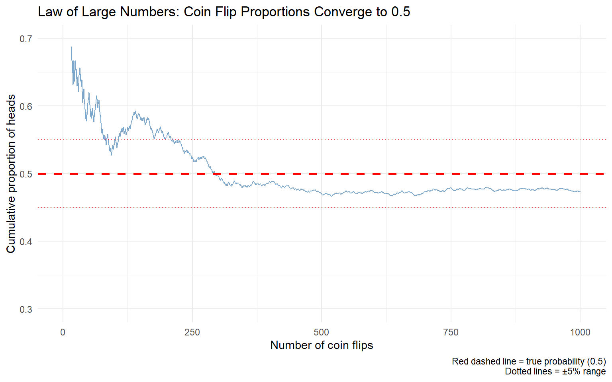
What this shows:
Let A denote an event of interest (e.g., “heads on a coin flip”, “vote for party X”, “sum of dice equals 7”). If P(A) = p and we observe n independent trials with the same distribution (i.i.d.), then the sample frequency of A:
\hat{p}_n = \frac{\text{number of occurrences of } A}{n}
converges to p as n increases.
Dice example: The event “sum = 7” with two dice has probability 6/36 ≈ 16.7\%, while “sum = 4” has 3/36 ≈ 8.3\%. Over many throws, a sum of 7 appears about twice as often as a sum of 4.
Election polling: If population support for a party equals p, then under random sampling of size n, the observed frequency \hat{p}_n will approach p as n grows (assuming random sampling and independence).
Quality control: If 2% of products are defective, then in large batches, approximately 2% will be found defective (assuming independent production).
Bottom line: Randomness underpins statistical inference by turning uncertainty in individual outcomes into predictable distributions for estimates. The Law of Large Numbers guarantees that the “noise” of individual outcomes averages out, allowing us to:
This principle works in surveys, experiments, and even quantum phenomena (in the frequentist interpretation).
The Central Limit Theorem states that the distribution of sample means approaches a normal distribution as sample size increases, regardless of the shape of the original population distribution. This holds true even for highly skewed or non-normal populations.
Consider income data, which is typically right-skewed with a long tail of high earners. While individual incomes don’t follow a normal distribution, something remarkable happens when we repeatedly take samples and calculate their means:
What “normally distributed sample means” actually means:
This predictable pattern (normal distribution) allows us to:
Concrete Example: Imagine a city where individual incomes range from $20,000 to $10,000,000, heavily skewed right. If you:
For a population with mean μ and finite variance σ²:
Imagine you flip a coin 10 times and get 8 heads. Is the coin biased, or did you just get lucky? This is the core question statistical significance (statistical inference) helps us answer.
Statistical significance tells us whether patterns in our data likely reflect something real or could have happened by pure chance.
Statistical significance is a measure (p-value) of how confident we can be that patterns observed in our sample are not due to chance alone. When a result is statistically significant (typically p-value < 0.05), it means the probability of obtaining such data in the absence of a real effect is very low.
Statistical hypothesis testing works like a criminal trial:
Crucial distinction: “Not guilty” ≠ “Innocent”
In statistics, we always start by assuming nothing special is happening:
Key principle: We maintain the null hypothesis (innocence) unless our data provides strong evidence against it—“beyond a reasonable doubt” in legal terms, or “p < 0.05” in statistical terms.
The p-value answers one specific question:
“If nothing special were happening (null hypothesis is true), how surprising would our results be?”
A p-value is the probability of observing the study’s results, or more extreme results, if the null hypothesis (a statement of no effect or no difference) is true.
You flip a coin 10 times and get 8 heads. What’s the p-value?
The calculation: If the coin were fair, the probability of getting 8 or more heads is: p = P(≥8 \text{ heads in 10 flips}) \approx 0.055 \approx 5.5\%
P(X \geq 8) = \sum_{k=8}^{10} \binom{10}{k} 0,5^{10} = \frac{56}{1024} \approx 0,0547
Interpretation: There’s a 5.5% chance of getting results this extreme with a fair coin. That’s somewhat unusual but not shocking.
A p-value is the probability of getting results at least as extreme as what you observed, assuming the null hypothesis is true.
Common Mistake: The p-value is NOT the probability that the null hypothesis is true! It assumes the null is true and tells you how unusual your data would be in that world.
I can see why the example might be challenging for beginners! Here’s a revised version that builds up the intuition more gradually without requiring knowledge of Bayes theorem or significance levels:
Imagine this courtroom scenario:
Prosecutor: “If the defendant were innocent, there’s only a 1% chance we’d find his DNA at the crime scene. We found his DNA. Therefore, there’s a 99% chance he’s guilty!”
This is WRONG! The prosecutor confused:
When we get p = 0.01, it’s tempting to think:
❌ WRONG: “There’s only a 1% chance the null hypothesis is true”
❌ WRONG: “There’s a 99% chance our treatment works”
✅ CORRECT: “If the null hypothesis were true, there’s only a 1% chance we’d see data this extreme”
Imagine a rare disease test that’s 99% accurate:
Here’s the key: Suppose only 1 in 1000 people actually have this disease.
Now let’s test 10,000 people:
If you test positive, what’s the chance you actually have the disease?
The same thing happens in research:
A p-value tells you how surprising your data would be IF the null hypothesis were true. It doesn’t tell you the probability that the null hypothesis IS true.
Think of it like this: The probability of the ground being wet IF it rained is very different from the probability it rained IF the ground is wet—the ground could be wet from a sprinkler!
Remember: A p-value tells you P(Data | Null is true), not P(Null is true | Data). These are as different as P(Wet ground | Rain) and P(Rain | Wet ground)—the ground could be wet from a sprinkler!
One of the most powerful tools in statistical analysis is regression analysis—a method for understanding and quantifying relationships between variables.
The core idea is simple: How does one thing relate to another, and can we use that relationship to make predictions?
The One-Sentence Summary: Regression helps us understand how things relate to each other in a messy, complicated world where everything affects everything else.
Imagine you’re curious about the relationship between education and income. You notice that people with more education tend to earn more money, but you want to understand this relationship more precisely:
Regression analysis provides systematic answers to these questions. It’s like finding the “best-fitting story” that describes how variables relate to each other.
A variable is any characteristic that can take different values across units of observation. In political science:
💡 In Plain English: A variable is anything that changes. If everyone voted the same way, “voting preference” wouldn’t be a variable—it would be a constant. We study variables because we want to understand why things differ.
Consider a typical pre-election news headline: “Candidate Smith’s approval rating reaches 68%.” Your immediate inference likely suggests favorable electoral prospects for Smith—not guaranteed victory, but a strong position. You naturally understand that higher approval ratings tend to predict better electoral performance, even though the relationship is not perfect.
This intuitive assessment exemplifies the core logic of regression analysis. You used one piece of information (approval rating) to make a prediction about another outcome (electoral success). Moreover, you recognized both the relationship between these variables and the uncertainty inherent in your prediction.
While such informal reasoning serves us well in daily life, it has important limitations. How much better are Smith’s chances at 68% approval compared to 58%? What happens when we need to consider multiple factors simultaneously—approval ratings, economic conditions, and incumbency status? How confident should we be in our predictions?
Regression analysis provides a systematic framework for addressing these questions. It transforms our intuitive understanding of relationships into precise mathematical models that can be tested and refined. Through regression analysis, researchers can:
Generate precise predictions: Move beyond general assessments to specific numerical estimates—for instance, predicting not just that Smith will “probably win,” but estimating the expected vote share and range of likely outcomes.
Identify which factors matter most: Determine the relative importance of different variables—perhaps discovering that economic conditions influence elections more strongly than approval ratings.
Quantify uncertainty in predictions: Explicitly measure how confident we should be in our predictions, distinguishing between near-certain outcomes and educated guesses.
Test theoretical propositions with empirical data: Evaluate whether our beliefs about cause-and-effect relationships hold up when examined systematically across many observations.
In essence, regression analysis systematizes the pattern recognition we perform intuitively, providing tools to make our predictions more accurate, our comparisons more meaningful, and our conclusions more reliable.
A model represents an object, person, or system in an informative way. Models divide into physical representations (such as architectural models) and abstract representations (such as mathematical equations describing atmospheric dynamics).
The core of statistical thinking can be expressed as:
Y = f(X) + \text{error}
This equation states that our outcome (Y) equals some function of our predictors (X), plus unpredictable variation.
Components:
💡 What This Really Means: Think of it like a recipe. Your grade in a class (Y) depends on study hours (X), but not perfectly. Two students studying 10 hours might get different grades because of test anxiety, prior knowledge, or just luck (the error term). Regression finds the average relationship.
This model provides the foundation for all statistical analysis—from simple correlations to complex machine learning algorithms.
Regression helps answer fundamental questions such as:
Let’s start with the simplest case: the relationship between two variables. Suppose we plot education (years of schooling) on the x-axis and annual income on the y-axis for 100 people. We’d see a cloud of points, and regression finds the straight line that best represents the pattern in these points.
What makes a line “best”? The regression line minimizes the total squared vertical distances from all points to the line. Think of it as finding the line that makes the smallest total prediction error.
The equation of this line is: Y = a + bX + \text{error}
Or in our example: \text{Income} = a + b \times \text{Education} + \text{error}
Where:
Interpreting the Results:
If our analysis finds: \text{Income} = 15,000 + 4,000 \times \text{Education}
This tells us:
A crucial distinction: regression shows association, not necessarily causation. Our education-income regression shows they’re related, but doesn’t prove education causes higher income. Other explanations are possible:
Example of Spurious Correlation: A regression might show that ice cream sales strongly predict drowning deaths. Does ice cream cause drowning? No! Both increase in summer (the common cause, confounding variable).
Real life is complicated—many factors influence outcomes simultaneously. Multiple regression lets us examine one relationship while “controlling for” or “holding constant” other variables.
Returning to education and income, we might wonder: Is the education effect just because educated people tend to be from wealthier families, or live in cities? Multiple regression can separate these effects:
\text{Income} = a + b_1 \times \text{Education} + b_2 \times \text{Age} + b_3 \times \text{Urban} + b_4 \times \text{Parent Income} + \text{error}
Now b_1 represents the education effect after accounting for age, location, and family background. If b_1 = 3,000, it means: “Comparing people of the same age, location, and family background, each additional year of education is associated with $3,000 more income.”
Demographic Example: Fertility and Women’s Education
Researchers studying fertility might find: \text{Children} = 4.5 - 0.3 \times \text{Education}
This suggests each year of women’s education is associated with 0.3 fewer children. But is education the cause, or are educated women different in other ways? Adding controls:
\text{Children} = a - 0.15 \times \text{Education} - 0.2 \times \text{Urban} + 0.1 \times \text{Husband Education} - 0.4 \times \text{Contraceptive Access}
Now we see education’s association is weaker (-0.15 instead of -0.3) after accounting for urban residence and contraceptive access. This suggests part of education’s apparent effect operates through these other pathways.
This is what we’re trying to understand or predict:
These are factors we think might influence the outcome:
Handling Categorical Variables: We can’t directly put “religion” into an equation. Instead, we create binary variables:
The basic regression idea adapts to many situations:
For continuous outcomes (income, height, blood pressure): Y = a + b_1X_1 + b_2X_2 + … + \text{error}
For binary outcomes (died/survived, migrated/stayed, married/unmarried):
Instead of predicting the outcome directly, we predict the probability: \log\left(\frac{p}{1-p}\right) = a + b_1X_1 + b_2X_2 + …
Where p is the probability of the event occurring.
Example: Predicting migration probability based on age, education, and marital status. The model might find young, educated, unmarried people have 40% probability of migrating, while older, less educated, married people have only 5% probability.
For count outcomes (number of children, number of doctor visits): \log(\text{expected count}) = a + b_1X_1 + b_2X_2 + …
Example: Modeling number of children based on women’s characteristics. Useful because it ensures predictions are never negative (can’t have -0.5 children!).
What it’s for: Predicting when something will happen, not just if it will happen.
The challenge: Imagine you’re studying how long marriages last. You follow 1,000 couples for 10 years, but by the end of your study:
Regular regression can’t handle this “incomplete story” problem—those 600 ongoing marriages contain valuable information, but we don’t know their endpoints yet.
How Cox models help: Instead of trying to predict the exact timing, they focus on relative risk—who’s more likely to experience the event sooner. Think of it like asking “At any given moment, who’s at higher risk?” rather than “Exactly when will this happen?”
Real-world applications:
The coefficient tells us the expected change in outcome for a one-unit increase in the predictor, holding other variables constant.
Examples of Interpretation:
Linear regression for income:
Logistic regression for infant mortality:
Multiple regression for life expectancy:
The regression also tests whether relationships could be due to chance:
But remember: Statistical significance ≠ practical importance. With large samples, tiny effects become “significant.”
Just as we have confidence intervals for means or proportions, we have them for regression coefficients:
“The effect of education on income is $3,500 per year, 95% CI: [$2,800, $4,200]”
This means we’re 95% confident the true effect is between $2,800 and $4,200.
R^2 (R-squared) measures the proportion of variation in the outcome explained by the predictors:
Example: A model of income with only education might have R^2 = 0.15 (education explains 15% of income variation). Adding age, experience, and location might increase R^2 to 0.35 (together they explain 35%).
Regression makes assumptions that may not hold:
Assumes straight-line relationships. But what if education’s effect on income is stronger at higher levels? We can add polynomial terms: \text{Income} = a + b_1 \times \text{Education} + b_2 \times \text{Education}^2
Assumes observations are independent. But family members might be similar, repeated measures on the same person are related, and neighbors might influence each other. Special methods handle these dependencies.
Assumes error variance is constant. But prediction errors might be larger for high-income people than low-income people. Diagnostic plots help detect this.
Assumes errors follow normal distribution. Important for small samples and hypothesis tests, less critical for large samples.
Note: The first assumption (exogeneity) is about getting the right answer. The others are mostly about precision and statistical inference. Violating exogeneity means your model is fundamentally wrong; violating the others means your confidence intervals and p-values might be off.
Endogeneity (omitted variable bias): Forgetting about hidden factors that affect both X and Y, violating the fundamental exogeneity assumption. Example: Studying education→income without accounting for ability.
Simultaneity/Reverse causality: When X and Y determine each other at the same time. Simple regression assumes one-way causation, but reality is often bidirectional. Example: Price affects demand AND demand affects price simultaneously.
Confounding: Failing to account for variables that affect both predictor and outcome, leading to spurious relationships. Example: Ice cream sales correlate with drownings (both caused by summer).
Selection bias: Non-random samples that systematically exclude certain groups, making results ungeneralizable. Example: Surveying only smartphone users about internet usage.
Ecological fallacy: Assuming group-level patterns apply to individuals. Example: Rich countries have lower birth rates ≠ rich people have fewer children.
P-hacking (data dredging): Testing multiple hypotheses until finding significance, or tweaking analysis until p < 0.05. With 20 tests, you expect 1 false positive by chance alone!
Overfitting: Building a model too complex for your data - perfect on training data, useless for prediction. Remember: With enough parameters, you can fit an elephant.
Survivorship bias: Analyzing only “survivors” while ignoring failures. Example: Studying successful companies while ignoring those that went bankrupt.
Overgeneralization: Extending findings beyond the studied population, time period, or context. Example: Results from US college students ≠ universal human behavior.
Remember: The first three are forms of endogeneity - they violate E[\varepsilon|X]=0 and make your coefficients fundamentally wrong. The others make results misleading or non-representative.
Understanding what factors influence fertility decisions: \text{Children} = f(\text{Education, Income, Urban, Religion, Contraception, …})
Helps identify policy levers for countries concerned about high or low fertility.
Policy levers are the tools and methods that governments and organizations use to influence events and achieve specific goals by affecting behavior and outcomes.
Predicting life expectancy or mortality risk: \text{Mortality Risk} = f(\text{Age, Sex, Smoking, Education, Healthcare Access, …})
Used by insurance companies, public health officials, and researchers.
Understanding who migrates and why: P(\text{Migration}) = f(\text{Age, Education, Employment, Family Ties, Distance, …})
Helps predict population flows and plan for demographic change.
Analyzing union formation and dissolution: P(\text{Divorce}) = f(\text{Age at Marriage, Education Match, Income, Children, Duration, …})
Informs social policy and support services.
Including too many predictors can make the model fit perfectly in your sample but fail with new data. Like memorizing exam answers instead of understanding concepts.
Solution: Use simpler models, cross-validation, or reserve some data for testing.
When predictors are highly correlated (e.g., years of education and degree level), the model can’t separate their effects.
Solution: Choose one variable or combine them into an index.
Leaving out important variables can make other effects appear stronger or weaker than they really are.
Example: The relationship between ice cream sales and crime rates disappears when you control for temperature.
Using the model outside the range of observed data.
Example: If your data includes education from 0-20 years, don’t predict income for someone with 30 years of education.
Think of regression as a sophisticated averaging technique:
Each added variable makes our prediction more specific and (hopefully) more accurate.
Research Question: What factors influence age at first birth?
Data: Survey of 1,000 women who have had at least one child
Variables:
Simple Regression Result: \text{Age at First Birth} = 18 + 0.8 \times \text{Education}
Interpretation: Each year of education associated with 0.8 years later first birth.
Multiple Regression Result: \text{Age at First Birth} = 16 + 0.5 \times \text{Education} + 2 \times \text{Urban} + 0.03 \times \text{Income} - 1.5 \times \text{Religious}
Interpretation:
This richer model helps us understand that education’s effect partly operates through urban residence and income.
Regression is a gateway to advanced statistical modeling. Once you understand the basic concept—using variables to predict outcomes and quantifying relationships—you can explore:
The key insight remains: We’re trying to understand how things relate to each other in a systematic, quantifiable way.
No analysis is better than the data it’s based on. Understanding data quality issues is crucial for demographic and social research.
Accuracy: How close are measurements to true values?
Example: Age reporting often shows “heaping” at round numbers (30, 40, 50) because people round their ages.
Completeness: What proportion of the population is covered?
Example: Birth registration completeness varies widely:
Timeliness: How current is the data?
Example: Census conducted every 10 years becomes increasingly outdated, especially in rapidly changing areas.
Consistency: Are definitions and methods stable over time and space?
Example: Definition of “urban” varies by country, making international comparisons difficult.
Accessibility: Can researchers and policy makers actually use the data?
Census: Complete enumeration of population
Advantages:
Disadvantages:
Sample Surveys: Detailed data from population subset
Examples:
Advantages:
Disadvantages:
Administrative Records: Data collected for non-statistical purposes
Examples:
Advantages:
Disadvantages:
Age Heaping: Tendency to report ages ending in 0 or 5
Detection: Calculate Whipple’s Index or Myers’ Index
Impact: Affects age-specific rates and projections
Digit Preference: Reporting certain final digits more than others
Example: Birth weights often reported as 3,000g, 3,500g rather than precise values
Recall Bias: Difficulty remembering past events accurately
Example: “How many times did you visit a doctor last year?” Often underreported for frequent visitors, overreported for rare visitors.
Proxy Reporting: Information provided by someone else
Challenge: Household head reporting for all members may not know everyone’s exact age or education
Statistics isn’t just about numbers—it involves real people and has real consequences.
Participants should understand:
Challenge in Demographics: Census participation is often mandatory, raising ethical questions about consent.
Statistical Disclosure Control: Protecting individual identity in published data
Methods include:
Example: In a table of occupation by age by sex for a small town, there might be only one female doctor aged 60-65, making her identifiable.
Who’s Counted?: Decisions about who to include affect representation
Differential Privacy: Mathematical framework for privacy protection while maintaining statistical utility
Trade-off: More privacy protection = less accurate statistics
Cherry-Picking: Selecting only favorable results
Example: Reporting decline in teen pregnancy from peak year rather than showing full trend
P-Hacking: Manipulating analysis to achieve statistical significance
Ecological Fallacy: Inferring individual relationships from group data
Example: Counties with more immigrants have higher average incomes ≠ immigrants have higher incomes
Uncertainty Communication: Always report confidence intervals or margins of error
Context Provision: Include relevant comparison groups and historical trends
Limitation Acknowledgment: Clearly state what data can and cannot show
Understanding what statistics is NOT is as important as understanding what it is.
Reality: Statistics can only provide evidence, never absolute proof. And proper statistics, honestly applied, constrains conclusions significantly.
Example: A study finds correlation between ice cream sales and drowning deaths. Statistics doesn’t “prove” ice cream causes drowning—both are related to summer weather.
Reality: Beyond a certain point, larger samples add little precision but may add bias.
Example: Online survey with 1 million responses may be less accurate than probability sample of 1,000 due to self-selection bias.
Diminishing Returns:
The jump from 10,000 to 100,000 barely improves precision but costs 10\times more.
Reality: With large samples, tiny differences become “statistically significant” even if meaningless.
Example: Study of 100,000 people finds men are 0.1 cm taller on average (p < 0.001). Statistically significant but practically irrelevant.
Reality: Correlation is necessary but not sufficient for causation.
Classic Examples:
Reality: Statistical randomness is carefully controlled and systematic.
Example: Random sampling requires careful procedure, not just grabbing whoever is convenient.
Reality: Averages can be misleading when distributions are skewed or multimodal.
Example: Average income of bar patrons is $50,000. Bill Gates walks in. Now average is $1 million. Nobody’s actual income changed.
Reality: Extrapolation assumes conditions remain constant.
Example: Linear population growth projection from 1950-2000 would badly overestimate 2050 population because it misses fertility decline.
These statistical foundations enable sophisticated demographic analyses. Let’s explore key applications.
Intercensal Estimates: Estimating population between censuses
Components Method: P(t+1) = P(t) + B - D + I - E
Where:
Each component estimated from different sources with different error structures.
Population Projections: Forecasting future population
Cohort Component Method:
Uncertainty increases with projection horizon.
Crude Rates: Events per 1,000 population
\text{Crude Birth Rate} = \frac{\text{Births}}{\text{Mid-year Population}} \times 1,000
Age-Specific Rates: Control for age structure
\text{Age-Specific Fertility Rate} = \frac{\text{Births to women aged } x}{\text{Women aged } x} \times 1,000
Standardization: Compare populations with different structures
Direct Standardization: Apply population’s rates to standard age structure Indirect Standardization: Apply standard rates to population’s age structure
Life tables summarize mortality experience of a population.
Key Columns:
Example Interpretation: If q_{65} = 0.015, then 1.5% of 65-year-olds die before reaching 66. If e_{65} = 18.5, then 65-year-olds average 18.5 more years of life.
Total Fertility Rate (TFR): Average children per woman given current age-specific rates
\text{TFR} = \sum (\text{ASFR} \times \text{age interval width})
Example: If each 5-year age group from 15-49 has ASFR = 20 per 1,000: \text{TFR} = 7 \text{ age groups} \times \frac{20}{1,000} \times 5 \text{ years} = 0.7 \text{ children per woman}
This very low TFR indicates below-replacement fertility.
Net Migration Rate: \text{NMR} = \frac{\text{Immigrants} - \text{Emigrants}}{\text{Population}} \times 1,000
Migration Effectiveness Index: \text{MEI} = \frac{|\text{In} - \text{Out}|}{\text{In} + \text{Out}}
Disability-Adjusted Life Years (DALYs): Years of healthy life lost
DALY = Years of Life Lost (YLL) + Years Lived with Disability (YLD)
Healthy Life Expectancy: Expected years in good health
Combines mortality and morbidity information.
Modern demographic and social statistics relies heavily on computational tools.
R: Free, open-source, extensive demographic packages
Stata: Widely used in social sciences
SPSS: User-friendly interface
Python: General programming language with statistical libraries
Statistics: The science of collecting, organizing, analyzing, interpreting, and presenting data to understand phenomena and support decision-making
Descriptive Statistics: Methods for summarizing and presenting data in meaningful ways without extending conclusions beyond the observed data
Inferential Statistics: Techniques for drawing conclusions about populations from samples, including estimation and hypothesis testing
Population: The complete set of individuals, objects, or measurements about which conclusions are to be drawn
Sample: A subset of the population that is actually observed or measured to make inferences about the population
Superpopulation: A theoretical infinite population from which observed finite populations are considered to be samples
Parameter: A numerical characteristic of a population (usually unknown and denoted by Greek letters)
Statistic: A numerical characteristic calculated from sample data (known and denoted by Roman letters)
Estimator: A rule or formula for calculating estimates of population parameters from sample data
Estimand: The specific population parameter targeted for estimation
Estimate: The numerical value produced by applying an estimator to observed data
Random Error (Sampling Error): Unpredictable variation arising from the sampling process that decreases with larger samples
Systematic Error (Bias): Consistent deviation from true values that cannot be reduced by increasing sample size
Sampling: The process of selecting a subset of units from a population for measurement
Sampling Frame: The list or device from which a sample is drawn, ideally containing all population members
Probability Sampling: Sampling methods where every population member has a known, non-zero probability of selection
Simple Random Sampling: Every possible sample of size n has equal probability of selection
Systematic Sampling: Selection of every kth element from an ordered sampling frame
Stratified Sampling: Division of population into homogeneous subgroups before sampling within each
Cluster Sampling: Selection of groups (clusters) rather than individuals
Non-probability Sampling: Sampling methods without guaranteed known selection probabilities
Convenience Sampling: Selection based purely on ease of access
Purposive Sampling: Deliberate selection based on researcher judgment
Quota Sampling: Selection to match population proportions on key characteristics without random selection
Snowball Sampling: Participants recruit additional subjects from their acquaintances
Standard Error: The standard deviation of the sampling distribution of a statistic
Margin of Error: Maximum expected difference between estimate and parameter at specified confidence
Confidence Interval: Range of plausible values for a parameter at specified confidence level
Confidence Level: Probability that the confidence interval method produces intervals containing the parameter
Data: Collected observations or measurements
Quantitative Data: Numerical measurements (continuous or discrete)
Qualitative Data: Categorical information (nominal or ordinal)
Data Distribution: Description of how values spread across possible outcomes
Frequency Distribution: Summary showing how often each value occurs in data
Absolute Frequency: Count of observations for each value
Relative Frequency: Proportion of observations in each category
Cumulative Frequency: Running total of frequencies up to each value
## ============================================
## Visualizations for Statistics & Demography
## Chapter 1: Foundations
## ============================================
# Load required libraries
library(ggplot2)
library(dplyr)
library(tidyr)
library(gridExtra)
library(scales)
library(patchwork) # for combining plots
# Set theme for all plots
theme_set(theme_minimal(base_size = 12))
# Color palette for consistency
colors <- c("#2E86AB", "#A23B72", "#F18F01", "#C73E1D", "#6A994E")
# ==================================================
# 1. POPULATION vs SAMPLE VISUALIZATION
# ==================================================
# Create a population and sample visualization
set.seed(123)
# Generate population data (e.g., ages of 10,000 people)
population <- data.frame(
id = 1:10000,
age = round(rnorm(10000, mean = 40, sd = 15))
)
population$age[population$age < 0] <- 0
population$age[population$age > 100] <- 100
# Take a random sample
sample_size <- 500
sample_data <- population[sample(nrow(population), sample_size), ]
# Create visualization
p1 <- ggplot(population, aes(x = age)) +
geom_histogram(binwidth = 5, fill = colors[1], alpha = 0.7, color = "white") +
geom_vline(xintercept = mean(population$age),
color = colors[2], linetype = "dashed", size = 1.2) +
labs(title = "Population Distribution (N = 10,000)",
subtitle = paste("Population mean (μ) =", round(mean(population$age), 2), "years"),
x = "Age (years)", y = "Frequency") +
theme(plot.title = element_text(face = "bold"))
p2 <- ggplot(sample_data, aes(x = age)) +
geom_histogram(binwidth = 5, fill = colors[3], alpha = 0.7, color = "white") +
geom_vline(xintercept = mean(sample_data$age),
color = colors[4], linetype = "dashed", size = 1.2) +
labs(title = paste("Sample Distribution (n =", sample_size, ")"),
subtitle = paste("Sample mean (x̄) =", round(mean(sample_data$age), 2), "years"),
x = "Age (years)", y = "Frequency") +
theme(plot.title = element_text(face = "bold"))
# Combine plots
population_sample_plot <- p1 / p2
print(population_sample_plot)
# ==================================================
# 2. TYPES OF DATA DISTRIBUTIONS
# ==================================================
# Generate different distribution types
set.seed(456)
n <- 5000
# Normal distribution
normal_data <- rnorm(n, mean = 50, sd = 10)
# Right-skewed distribution (income-like)
right_skewed <- rgamma(n, shape = 2, scale = 15)
# Left-skewed distribution (age at death in developed country)
left_skewed <- 90 - rgamma(n, shape = 3, scale = 5)
left_skewed[left_skewed < 0] <- 0
# Bimodal distribution (e.g., height of mixed male/female population)
n2 <- 20000
nf <- n2 %/% 2; nm <- n2 - nf
bimodal <- c(rnorm(nf, mean = 164, sd = 5),
rnorm(nm, mean = 182, sd = 5))
# Create data frame
distributions_df <- data.frame(
Normal = normal_data,
`Right Skewed` = right_skewed,
`Left Skewed` = left_skewed,
Bimodal = bimodal
) %>%
pivot_longer(everything(), names_to = "Distribution", values_to = "Value")
# Plot distributions
distributions_plot <- ggplot(distributions_df, aes(x = Value, fill = Distribution)) +
geom_histogram(bins = 30, alpha = 0.7, color = "white") +
facet_wrap(~Distribution, scales = "free", nrow = 2) +
scale_fill_manual(values = colors[1:4]) +
labs(title = "Types of Data Distributions",
subtitle = "Common patterns in demographic data",
x = "Value", y = "Frequency") +
theme(plot.title = element_text(face = "bold", size = 14),
legend.position = "none")
print(distributions_plot)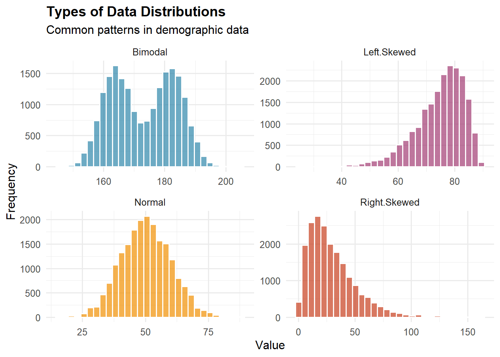
# ==================================================
# 3. NORMAL DISTRIBUTION WITH 68-95-99.7 RULE
# ==================================================
# Generate normal distribution data
set.seed(789)
mean_val <- 100
sd_val <- 15
x <- seq(mean_val - 4*sd_val, mean_val + 4*sd_val, length.out = 1000)
y <- dnorm(x, mean = mean_val, sd = sd_val)
df_norm <- data.frame(x = x, y = y)
# Create the plot
normal_plot <- ggplot(df_norm, aes(x = x, y = y)) +
# Fill areas under the curve
geom_area(data = subset(df_norm, x >= mean_val - sd_val & x <= mean_val + sd_val),
aes(x = x, y = y), fill = colors[1], alpha = 0.3) +
geom_area(data = subset(df_norm, x >= mean_val - 2*sd_val & x <= mean_val + 2*sd_val),
aes(x = x, y = y), fill = colors[2], alpha = 0.2) +
geom_area(data = subset(df_norm, x >= mean_val - 3*sd_val & x <= mean_val + 3*sd_val),
aes(x = x, y = y), fill = colors[3], alpha = 0.1) +
# Add the curve
geom_line(size = 1.5, color = "black") +
# Add vertical lines for standard deviations
geom_vline(xintercept = mean_val, linetype = "solid", size = 1, color = "black") +
geom_vline(xintercept = c(mean_val - sd_val, mean_val + sd_val),
linetype = "dashed", size = 0.8, color = colors[1]) +
geom_vline(xintercept = c(mean_val - 2*sd_val, mean_val + 2*sd_val),
linetype = "dashed", size = 0.8, color = colors[2]) +
geom_vline(xintercept = c(mean_val - 3*sd_val, mean_val + 3*sd_val),
linetype = "dashed", size = 0.8, color = colors[3]) +
# Add labels
annotate("text", x = mean_val, y = max(y) * 0.5, label = "68%",
size = 5, fontface = "bold", color = colors[1]) +
annotate("text", x = mean_val, y = max(y) * 0.3, label = "95%",
size = 5, fontface = "bold", color = colors[2]) +
annotate("text", x = mean_val, y = max(y) * 0.1, label = "99.7%",
size = 5, fontface = "bold", color = colors[3]) +
# Labels
scale_x_continuous(breaks = c(mean_val - 3*sd_val, mean_val - 2*sd_val,
mean_val - sd_val, mean_val,
mean_val + sd_val, mean_val + 2*sd_val,
mean_val + 3*sd_val),
labels = c("μ-3σ", "μ-2σ", "μ-σ", "μ", "μ+σ", "μ+2σ", "μ+3σ")) +
labs(title = "Normal Distribution: The 68-95-99.7 Rule",
subtitle = "Proportion of data within standard deviations from the mean",
x = "Value", y = "Probability Density") +
theme(plot.title = element_text(face = "bold", size = 14))
print(normal_plot)# ==================================================
# 4. SIMPLE LINEAR REGRESSION
# ==================================================
# Load required libraries
library(ggplot2)
library(scales)
# Define color palette (this was missing in original code)
colors <- c("#2E86AB", "#A23B72", "#F18F01", "#C73E1D", "#592E83")
# Generate data for regression example (Education vs Income)
set.seed(2024)
n_reg <- 200
education <- round(rnorm(n_reg, mean = 14, sd = 3))
education[education < 8] <- 8
education[education > 22] <- 22
# Create income with linear relationship plus noise
income <- 15000 + 4000 * education + rnorm(n_reg, mean = 0, sd = 8000)
income[income < 10000] <- 10000
reg_data <- data.frame(education = education, income = income)
# Fit linear model
lm_model <- lm(income ~ education, data = reg_data)
# Create subset of data for residual lines
subset_indices <- sample(nrow(reg_data), 20)
subset_data <- reg_data[subset_indices, ]
subset_data$predicted <- predict(lm_model, newdata = subset_data)
# Create regression plot
regression_plot <- ggplot(reg_data, aes(x = education, y = income)) +
# Add points
geom_point(alpha = 0.6, size = 2, color = colors[1]) +
# Add regression line with confidence interval
geom_smooth(method = "lm", se = TRUE, color = colors[2], fill = colors[2], alpha = 0.2) +
# Add residual lines for a subset of points to show the concept
geom_segment(data = subset_data,
aes(x = education, xend = education,
y = income, yend = predicted),
color = colors[4], alpha = 0.5, linetype = "dotted") +
# Add equation to plot (adjusted position based on data range)
annotate("text", x = min(reg_data$education) + 1, y = max(reg_data$income) * 0.9,
label = paste("Income = $", format(round(coef(lm_model)[1]), big.mark = ","),
" + $", format(round(coef(lm_model)[2]), big.mark = ","), " × Education",
"\nR² = ", round(summary(lm_model)$r.squared, 3), sep = ""),
hjust = 0, size = 4, fontface = "italic") +
# Labels and formatting
scale_y_continuous(labels = dollar_format()) +
labs(title = "Simple Linear Regression: Education and Income",
subtitle = "Each year of education associated with higher income",
x = "Years of Education",
y = "Annual Income") +
theme_minimal() +
theme(plot.title = element_text(face = "bold", size = 14))
print(regression_plot)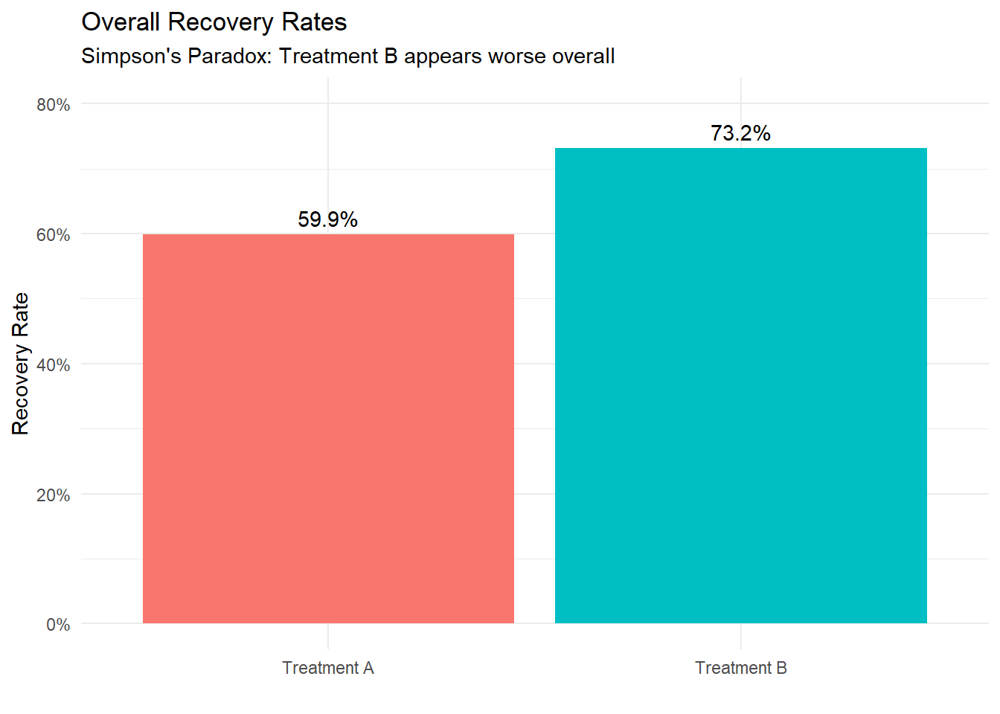
# ==================================================
# 5. SAMPLING ERROR AND SAMPLE SIZE
# ==================================================
# Show how standard error decreases with sample size
set.seed(111)
sample_sizes <- c(10, 25, 50, 100, 250, 500, 1000, 2500, 5000)
n_simulations <- 1000
# True population parameters
true_mean <- 50
true_sd <- 10
# Run simulations for each sample size
se_results <- data.frame()
for (n in sample_sizes) {
sample_means <- replicate(n_simulations, mean(rnorm(n, true_mean, true_sd)))
se_results <- rbind(se_results,
data.frame(n = n,
se_empirical = sd(sample_means),
se_theoretical = true_sd / sqrt(n)))
}
# Create the plot
se_plot <- ggplot(se_results, aes(x = n)) +
geom_line(aes(y = se_empirical, color = "Empirical SE"), size = 1.5) +
geom_point(aes(y = se_empirical, color = "Empirical SE"), size = 3) +
geom_line(aes(y = se_theoretical, color = "Theoretical SE"),
size = 1.5, linetype = "dashed") +
scale_x_log10(breaks = sample_sizes) +
scale_color_manual(values = c("Empirical SE" = colors[1],
"Theoretical SE" = colors[2])) +
labs(title = "Standard Error Decreases with Sample Size",
subtitle = "The precision of estimates improves with larger samples",
x = "Sample Size (log scale)",
y = "Standard Error",
color = "") +
theme(plot.title = element_text(face = "bold", size = 14),
legend.position = "top")
print(se_plot)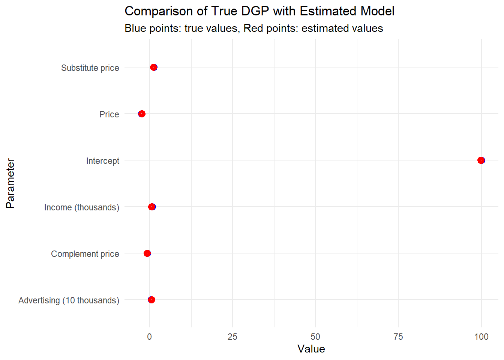
# ==================================================
# 6. CONFIDENCE INTERVALS VISUALIZATION
# ==================================================
# Simulate multiple samples and their confidence intervals
set.seed(999)
n_samples <- 20
sample_size_ci <- 100
true_mean_ci <- 50
true_sd_ci <- 10
# Generate samples and calculate CIs
ci_data <- data.frame()
for (i in 1:n_samples) {
sample_i <- rnorm(sample_size_ci, true_mean_ci, true_sd_ci)
mean_i <- mean(sample_i)
se_i <- sd(sample_i) / sqrt(sample_size_ci)
ci_lower <- mean_i - 1.96 * se_i
ci_upper <- mean_i + 1.96 * se_i
contains_true <- (true_mean_ci >= ci_lower) & (true_mean_ci <= ci_upper)
ci_data <- rbind(ci_data,
data.frame(sample = i, mean = mean_i,
lower = ci_lower, upper = ci_upper,
contains = contains_true))
}
# Create CI plot
ci_plot <- ggplot(ci_data, aes(x = sample, y = mean)) +
geom_hline(yintercept = true_mean_ci, color = "red",
linetype = "dashed", size = 1) +
geom_errorbar(aes(ymin = lower, ymax = upper, color = contains),
width = 0.3, size = 0.8) +
geom_point(aes(color = contains), size = 2) +
scale_color_manual(values = c("TRUE" = colors[1], "FALSE" = colors[4]),
labels = c("Misses true value", "Contains true value")) +
coord_flip() +
labs(title = "95% Confidence Intervals from 20 Different Samples",
subtitle = paste("True population mean = ", true_mean_ci,
" (red dashed line)", sep = ""),
x = "Sample Number",
y = "Sample Mean with 95% CI",
color = "") +
theme(plot.title = element_text(face = "bold", size = 14),
legend.position = "bottom")
print(ci_plot)
# ==================================================
# 7. SAMPLING DISTRIBUTIONS (CENTRAL LIMIT THEOREM)
# ==================================================
# ---- Setup ----
library(tidyverse)
library(ggplot2)
theme_set(theme_minimal(base_size = 13))
set.seed(2025)
# Skewed population (Gamma); change if you want another DGP
Npop <- 100000
population <- rgamma(Npop, shape = 2, scale = 10) # skewed right
mu <- mean(population)
sigma <- sd(population)
# ---- CLT: sampling distribution of the mean ----
sample_sizes <- c(1, 5, 10, 30, 100)
B <- 2000 # resamples per n
clt_df <- purrr::map_dfr(sample_sizes, \(n) {
tibble(n = n,
mean = replicate(B, mean(sample(population, n, replace = TRUE))))
})
# Normal overlays: N(mu, sigma/sqrt(n))
clt_range <- clt_df |>
group_by(n) |>
summarise(min_x = min(mean), max_x = max(mean), .groups = "drop")
normal_df <- clt_range |>
rowwise() |>
mutate(x = list(seq(min_x, max_x, length.out = 200))) |>
unnest(x) |>
mutate(density = dnorm(x, mean = mu, sd = sigma / sqrt(n)))
clt_plot <- ggplot(clt_df, aes(mean)) +
geom_histogram(aes(y = after_stat(density), fill = factor(n)),
bins = 30, alpha = 0.6, color = "white") +
geom_line(data = normal_df, aes(x, density), linewidth = 0.8) +
geom_vline(xintercept = mu, linetype = "dashed") +
facet_wrap(~ n, scales = "free", ncol = 3) +
labs(
title = "CLT: Sampling distribution of the mean → Normal(μ, σ/√n)",
subtitle = sprintf("Skewed population: Gamma(shape=2, scale=10). μ≈%.2f, σ≈%.2f; B=%d resamples each.", mu, sigma, B),
x = "Sample mean", y = "Density"
) +
guides(fill = "none")
clt_plot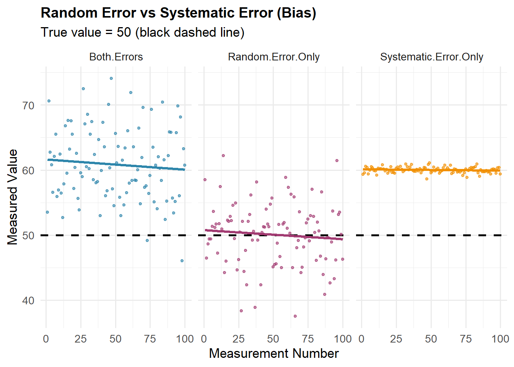
# ==================================================
# 8. TYPES OF SAMPLING ERROR
# ==================================================
# Create data to show random vs systematic error
set.seed(321)
n_measurements <- 100
true_value <- 50
# Random error only
random_error <- rnorm(n_measurements, mean = true_value, sd = 5)
# Systematic error (bias) only
systematic_error <- rep(true_value + 10, n_measurements) + rnorm(n_measurements, 0, 0.5)
# Both errors
both_errors <- rnorm(n_measurements, mean = true_value + 10, sd = 5)
error_data <- data.frame(
measurement = 1:n_measurements,
`Random Error Only` = random_error,
`Systematic Error Only` = systematic_error,
`Both Errors` = both_errors
) %>%
pivot_longer(-measurement, names_to = "Error_Type", values_to = "Value")
# Create error visualization
error_plot <- ggplot(error_data, aes(x = measurement, y = Value, color = Error_Type)) +
geom_hline(yintercept = true_value, linetype = "dashed", size = 1, color = "black") +
geom_point(alpha = 0.6, size = 1) +
geom_smooth(method = "lm", se = FALSE, size = 1.2) +
facet_wrap(~Error_Type, nrow = 1) +
scale_color_manual(values = colors[1:3]) +
labs(title = "Random Error vs Systematic Error (Bias)",
subtitle = paste("True value = ", true_value, " (black dashed line)", sep = ""),
x = "Measurement Number",
y = "Measured Value") +
theme(plot.title = element_text(face = "bold", size = 14),
legend.position = "none")
print(error_plot)
# ==================================================
# 9. DEMOGRAPHIC PYRAMID
# ==================================================
# Create age pyramid data
set.seed(777)
age_groups <- c("0-4", "5-9", "10-14", "15-19", "20-24", "25-29",
"30-34", "35-39", "40-44", "45-49", "50-54",
"55-59", "60-64", "65-69", "70-74", "75-79", "80+")
# Create data for a developing country pattern
male_pop <- c(12, 11.5, 11, 10.5, 10, 9.5, 9, 8.5, 8, 7.5, 7,
6, 5, 4, 3, 2, 1.5)
female_pop <- c(11.8, 11.3, 10.8, 10.3, 9.8, 9.3, 8.8, 8.3, 7.8,
7.3, 6.8, 5.8, 4.8, 3.8, 2.8, 2.2, 2)
pyramid_data <- data.frame(
Age = factor(rep(age_groups, 2), levels = rev(age_groups)),
Population = c(-male_pop, female_pop), # Negative for males
Sex = c(rep("Male", length(male_pop)), rep("Female", length(female_pop)))
)
# Create population pyramid
pyramid_plot <- ggplot(pyramid_data, aes(x = Age, y = Population, fill = Sex)) +
geom_bar(stat = "identity", width = 1) +
scale_y_continuous(labels = function(x) paste0(abs(x), "%")) +
scale_fill_manual(values = c("Male" = colors[1], "Female" = colors[3])) +
coord_flip() +
labs(title = "Population Pyramid",
subtitle = "Age and sex distribution (typical developing country pattern)",
x = "Age Group",
y = "Percentage of Population") +
theme(plot.title = element_text(face = "bold", size = 14),
legend.position = "top")
print(pyramid_plot)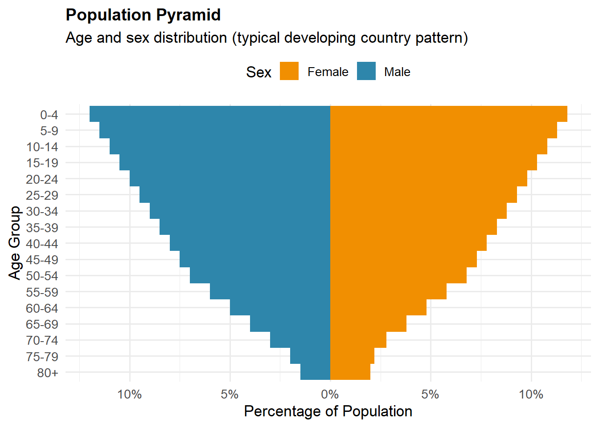
# ==================================================
# 10. REGRESSION RESIDUALS AND DIAGNOSTICS
# ==================================================
# Use the previous regression model for diagnostics
reg_diagnostics <- data.frame(
fitted = fitted(lm_model),
residuals = residuals(lm_model),
standardized_residuals = rstandard(lm_model),
education = reg_data$education,
income = reg_data$income
)
# Create diagnostic plots
# 1. Residuals vs Fitted
p_resid_fitted <- ggplot(reg_diagnostics, aes(x = fitted, y = residuals)) +
geom_point(alpha = 0.5, color = colors[1]) +
geom_hline(yintercept = 0, linetype = "dashed", color = "red") +
geom_smooth(method = "loess", se = TRUE, color = colors[2], size = 0.8) +
labs(title = "Residuals vs Fitted Values",
subtitle = "Check for homoscedasticity",
x = "Fitted Values", y = "Residuals")
# 2. Q-Q plot
p_qq <- ggplot(reg_diagnostics, aes(sample = standardized_residuals)) +
stat_qq(color = colors[1]) +
stat_qq_line(color = "red", linetype = "dashed") +
labs(title = "Normal Q-Q Plot",
subtitle = "Check for normality of residuals",
x = "Theoretical Quantiles", y = "Standardized Residuals")
# 3. Histogram of residuals
p_hist_resid <- ggplot(reg_diagnostics, aes(x = residuals)) +
geom_histogram(bins = 30, fill = colors[3], alpha = 0.7, color = "white") +
geom_vline(xintercept = 0, color = "red", linetype = "dashed") +
labs(title = "Distribution of Residuals",
subtitle = "Should be approximately normal",
x = "Residuals", y = "Frequency")
# 4. Residuals vs Predictor
p_resid_x <- ggplot(reg_diagnostics, aes(x = education, y = residuals)) +
geom_point(alpha = 0.5, color = colors[4]) +
geom_hline(yintercept = 0, linetype = "dashed", color = "red") +
geom_smooth(method = "loess", se = TRUE, color = colors[2], size = 0.8) +
labs(title = "Residuals vs Predictor",
subtitle = "Check for patterns",
x = "Education (years)", y = "Residuals")
# Combine diagnostic plots
diagnostic_plots <- (p_resid_fitted + p_qq) / (p_hist_resid + p_resid_x)
print(diagnostic_plots)
# ==================================================
# 11. SAVE ALL PLOTS (Optional)
# ==================================================
# Uncomment to save plots as high-resolution images
# ggsave("population_sample.png", population_sample_plot, width = 10, height = 8, dpi = 300)
# ggsave("distributions.png", distributions_plot, width = 12, height = 8, dpi = 300)
# ggsave("normal_distribution.png", normal_plot, width = 10, height = 6, dpi = 300)
# ggsave("regression.png", regression_plot, width = 10, height = 7, dpi = 300)
# ggsave("standard_error.png", se_plot, width = 10, height = 6, dpi = 300)
# ggsave("confidence_intervals.png", ci_plot, width = 10, height = 8, dpi = 300)
# ggsave("central_limit_theorem.png", clt_plot, width = 14, height = 5, dpi = 300)
# ggsave("error_types.png", error_plot, width = 14, height = 5, dpi = 300)
# ggsave("population_pyramid.png", pyramid_plot, width = 8, height = 8, dpi = 300)
# ggsave("regression_diagnostics.png", diagnostic_plots, width = 12, height = 10, dpi = 300)The Central Limit Theorem states that the distribution of sample means approaches a normal distribution as sample size increases, regardless of the shape of the original population distribution.
The most effective approach to understanding CLT is to observe the systematic transformation of the distribution as the number of dice increases. Beginning with 1 die (uniform distribution), we can observe how increasing the sample size gradually transforms the distribution into a normal distribution.
library(ggplot2)
library(dplyr)
set.seed(123)# Sample sizes to demonstrate
sample_sizes <- c(1, 2, 5, 10, 30, 50)
num_simulations <- 10000
# Simulate for each sample size
all_data <- data.frame()
for (n in sample_sizes) {
means <- replicate(num_simulations, {
dice <- sample(1:6, n, replace = TRUE)
mean(dice)
})
temp_df <- data.frame(
mean = means,
n = n,
label = paste(n, ifelse(n == 1, "die", "dice"))
)
all_data <- rbind(all_data, temp_df)
}
# Create ordered factor
all_data$label <- factor(all_data$label,
levels = paste(sample_sizes,
ifelse(sample_sizes == 1, "die", "dice")))
# Plot the progression
ggplot(all_data, aes(x = mean)) +
geom_histogram(aes(y = after_stat(density)),
bins = 40, fill = "#3b82f6", color = "white", alpha = 0.7) +
facet_wrap(~label, scales = "free", ncol = 3) +
labs(
title = "Central Limit Theorem: Step-by-Step Progression",
subtitle = sprintf("Each panel shows %s simulations demonstrating the convergence to normality",
format(num_simulations, big.mark = ",")),
x = "Mean Value",
y = "Density"
) +
theme_minimal() +
theme(
plot.title = element_text(size = 16, face = "bold"),
plot.subtitle = element_text(size = 11, color = "gray40"),
strip.text = element_text(face = "bold", size = 12),
strip.background = element_rect(fill = "#f0f0f0", color = NA)
)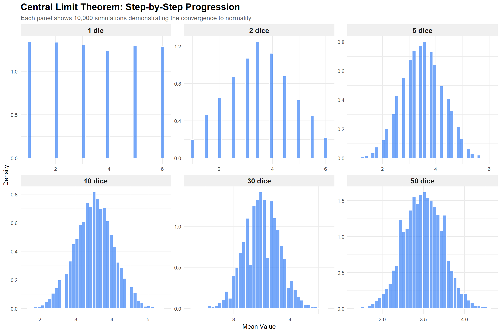
The distribution exhibits decreasing variability and increasingly pronounced bell-shaped characteristics as n increases.
A cleaner comparison of key developmental stages:
key_sizes <- all_data %>%
filter(n %in% c(1, 2, 5, 10, 30))
ggplot(key_sizes, aes(x = mean)) +
geom_histogram(aes(y = after_stat(density)),
bins = 40, fill = "#3b82f6", color = "white", alpha = 0.7) +
facet_wrap(~label, scales = "free_x", nrow = 1) +
labs(
title = "CLT Evolution: From Uniform to Normal",
x = "Mean Value",
y = "Density"
) +
theme_minimal() +
theme(
plot.title = element_text(size = 14, face = "bold"),
strip.text = element_text(face = "bold", size = 11),
axis.text.y = element_blank(),
axis.ticks.y = element_blank()
)
An alternative visualization method displaying all distributions simultaneously:
comparison_data <- all_data %>%
filter(n %in% c(1, 5, 10, 30))
ggplot(comparison_data, aes(x = mean, fill = label, color = label)) +
geom_density(alpha = 0.3, linewidth = 1.2) +
scale_fill_manual(values = c("#991b1b", "#ea580c", "#ca8a04", "#16a34a")) +
scale_color_manual(values = c("#991b1b", "#ea580c", "#ca8a04", "#16a34a")) +
labs(
title = "CLT Progression: Superimposed Distributions",
subtitle = "Systematic narrowing and convergence to normal form",
x = "Mean Value",
y = "Density",
fill = "Sample Size",
color = "Sample Size"
) +
theme_minimal() +
theme(
plot.title = element_text(size = 14, face = "bold"),
legend.position = "right"
)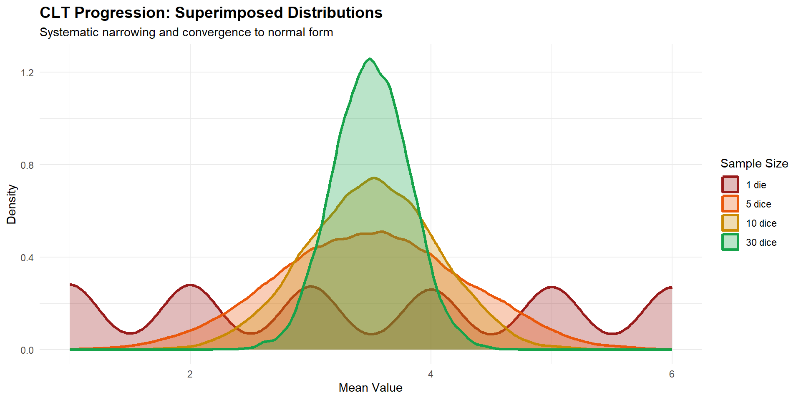
Key Observation: As sample size increases, the distribution exhibits:
The dispersion (standard deviation) decreases according to the relationship SE = σ/√n:
variance_data <- all_data %>%
group_by(n, label) %>%
summarise(
observed_sd = sd(mean),
theoretical_se = sqrt(35/12) / sqrt(n),
.groups = "drop"
)
ggplot(variance_data, aes(x = n)) +
geom_line(aes(y = observed_sd, color = "Observed SD"),
linewidth = 1.5) +
geom_point(aes(y = observed_sd, color = "Observed SD"),
size = 4) +
geom_line(aes(y = theoretical_se, color = "Theoretical SE"),
linewidth = 1.5, linetype = "dashed") +
geom_point(aes(y = theoretical_se, color = "Theoretical SE"),
size = 4) +
scale_color_manual(values = c("Observed SD" = "#3b82f6",
"Theoretical SE" = "#ef4444")) +
scale_x_continuous(breaks = sample_sizes) +
labs(
title = "Standard Error Decreases as Sample Size Increases",
subtitle = "Following the SE = σ/√n relationship",
x = "Sample Size (n)",
y = "Standard Deviation / Standard Error",
color = NULL
) +
theme_minimal() +
theme(
plot.title = element_text(size = 14, face = "bold"),
legend.position = "top",
legend.text = element_text(size = 11)
)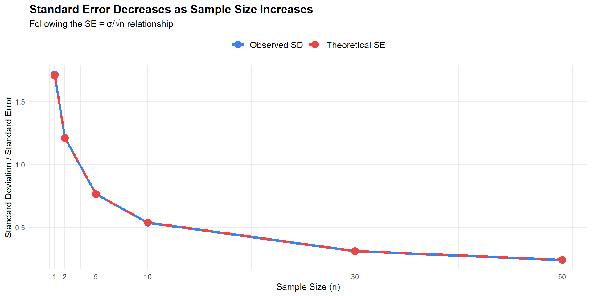
summary_stats <- all_data %>%
group_by(label) %>%
summarise(
n = first(n),
Observed_Mean = round(mean(mean), 3),
Observed_SD = round(sd(mean), 3),
Theoretical_Mean = 3.5,
Theoretical_SE = round(sqrt(35/12) / sqrt(first(n)), 3),
Range = paste0("[", round(min(mean), 2), ", ", round(max(mean), 2), "]")
) %>%
select(-label)
knitr::kable(summary_stats,
caption = "Observed vs Theoretical Values Across Sample Sizes")| n | Observed_Mean | Observed_SD | Theoretical_Mean | Theoretical_SE | Range |
|---|---|---|---|---|---|
| 1 | 3.470 | 1.716 | 3.5 | 1.708 | [1, 6] |
| 2 | 3.503 | 1.213 | 3.5 | 1.208 | [1, 6] |
| 5 | 3.494 | 0.764 | 3.5 | 0.764 | [1, 6] |
| 10 | 3.507 | 0.537 | 3.5 | 0.540 | [1.7, 5.4] |
| 30 | 3.500 | 0.311 | 3.5 | 0.312 | [2.27, 4.63] |
| 50 | 3.498 | 0.239 | 3.5 | 0.242 | [2.68, 4.3] |
Observations:
For a population with mean μ and finite variance σ²:
\bar{X} \sim N\left(\mu, \frac{\sigma^2}{n}\right) \text{ as } n \to \infty
Standard error of the mean:
SE_{\bar{X}} = \frac{\sigma}{\sqrt{n}}
For a fair die: μ = 3.5, σ² = 35/12 ≈ 2.917
This distributional transformation enables:
Essential Property of CLT: Although individual die rolls follow a uniform distribution, the distribution of means from multiple dice converges asymptotically to a normal distribution in a predictable manner consistent with mathematical theory, providing the foundation for classical statistical inference.
A proportion is simply the mean of a binary (0/1) variable. If you code “success” as 1 and “failure” as 0, then:
\hat{p} = \bar{x} = \frac{\sum x_i}{n}
For example, if 6 out of 10 people support a policy (coded as 1=support, 0=don’t support):
They’re identical! The special formulas for proportions are just the general formulas applied to binary data.
Both proportions and continuous means use the same fundamental formula for standard error:
SE = \frac{SD}{\sqrt{n}}
The Margin of Error (for 95% confidence) is then:
MoE = 1.96 \times SE = 1.96 \times \frac{SD}{\sqrt{n}}
For a sample proportion \hat{p}, the standard deviation is derived from the binomial distribution:
SD = \sqrt{p(1-p)}
Therefore:
SE_p = \sqrt{\frac{p(1-p)}{n}}
MoE_p = 1.96\sqrt{\frac{p(1-p)}{n}}
Example: Political Poll
If 60% of voters support a candidate (p = 0.6) with n = 400:
For a continuous variable like height, weight, or test scores:
SE_{\bar{x}} = \frac{SD}{\sqrt{n}}
MoE_{\bar{x}} = 1.96 \times \frac{SD}{\sqrt{n}}
Example: Mean Height
If measuring height with SD = 10 cm and n = 100:
The perception that proportions need larger samples arises from several factors:
The variance p(1-p) is maximized when p = 0.5, giving:
SD_{max} = \sqrt{0.5 \times 0.5} = 0.5
This means on a 0-1 scale, the standard deviation can be quite large relative to the range. For “maximum uncertainty” scenarios (p = 0.5):
n = \left(\frac{1.96 \times 0.5}{MoE}\right)^2 = \frac{0.9604}{MoE^2}
Sample size requirements for different margins of error (at p = 0.5):
| Desired MoE | Required n |
|---|---|
| ±1% (0.01) | 9,604 |
| ±2% (0.02) | 2,401 |
| ±3% (0.03) | 1,068 |
| ±5% (0.05) | 385 |
The desired precision differs by context:
These represent different levels of relative precision.
For a proportion measured as ±0.02 (2 percentage points):
For height measured as ±2 cm with SD = 10 cm:
When estimating rare proportions (e.g., p = 0.01), you need enough sample to actually observe the events:
Variance estimation is more complex because sample variance does not follow a normal distribution - it follows a scaled chi-squared distribution (for normally distributed data).
For a normally distributed variable, the standard error of the sample variance s^2 is:
SE(s^2) = s^2\sqrt{\frac{2}{n-1}}
Example: Height Variance
If height has s^2 = 100 cm² (so s = 10 cm) with n = 101:
Important considerations:
n \approx 1 + 2\left(\frac{1.96}{0.1}\right)^2 = 769
This is much larger than for means!
For the standard deviation itself (using delta method):
SE(s) \approx \frac{s}{\sqrt{2(n-1)}}
This is approximately half the coefficient of variation of the variance.
Covariance estimation is even more complex because it depends on the joint distribution of two variables.
For two variables X and Y from a bivariate normal distribution:
SE(Cov(X,Y)) \approx \sqrt{\frac{1}{n}\left[\sigma_X^2\sigma_Y^2 + \sigma_{XY}^2\right]}
Where:
In practice, these are estimated from the sample.
Example: Covariance of Height and Weight
Suppose:
SE(s_{XY}) \approx \sqrt{\frac{1}{100}[(10^2)(15^2) + 80^2]} = \sqrt{\frac{1}{100}[22,500 + 6,400]}
= \sqrt{289} = 17.0 \text{ cm·kg}
MoE = 1.96 \times 17.0 = ±33.3 \text{ cm·kg}
For the correlation coefficient r (Pearson’s), when the true correlation \rho is not zero:
SE(r) \approx \frac{(1-r^2)}{\sqrt{n}}
For r = 0.5 and n = 100:
SE(r) = \frac{1-0.25}{\sqrt{100}} = \frac{0.75}{10} = 0.075
MoE = 1.96 \times 0.075 = ±0.147
Important notes for variance/covariance:
To achieve 10% relative precision (MoE = 10% of the estimate):
For a Mean:
For a Proportion at p = 0.5:
For a Variance:
Variance requires approximately 8× the sample size of a mean for equivalent relative precision!
For Means (including proportions):
For Variance and Covariance:
Why proportions seem to need larger samples:
When comparing equivalent relative precision, sample size requirements for means and proportions are comparable!